第 6 章动作价值控制与离策略学习
第 3 章算过泥地上从起点 S7 出发的两条路（）：向上穿过泥地，折算后的平均回报为 ；向左绕开泥地，固定六步，回报为 。所以 S7 应该向左。这两个数都用到了泥地十次打滑九次这条规律。本章的智能体不知道这条规律，只能自己走。问题是：不知道打滑的概率，怎样发现应该向左？
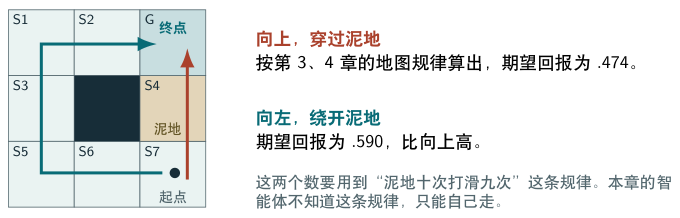
第 4 章知道模型，在 S7 向前看一步就能比较：向上到 S4，；向左到 S6，。第 5 章不用模型也能估计状态价值，但只评价一个给定的策略，从同一泥地轨迹估计的是旧策略的起点价值。现在允许在 S7 改选动作，只有状态价值却选不出动作：没有模型，就不知道哪个动作通向哪一格；仅知道一路向上的期望回报，还缺少向左绕行的回报。
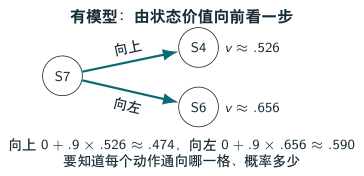
本章相对第 5 章有三处变化。估计的对象换成动作价值 ，每格每个动作一个数；动作价值把首动作列入预测条件，就能分别估计两条路，再改进策略（6.1）。任务从评价一个策略变成评价并改进策略（6.2–6.6）。数据可以由另一个策略产生（6.2 节末、6.3、6.7）。
这三处变化带来三个新困难，都来自同一点：估计动作价值的数据，要靠智能体自己的策略去采，而策略又由当前的估计决定。
困难一：不试就不知道。 所有估计从 开始。第一次向上恰好没打滑，两步到终点，回报 ；向左从没试过，估计仍是 。总挑估计大的动作，就再也不会去试向左，行动时必须保留试探（6.1）。左图按整回合回报更新；若用第 5 章 5.2 节的一步 TD 从零初值更新，走通一次只改到终点前一格的值，S7 处仍是 ，困难更明显。
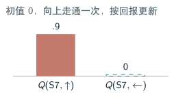
困难二：学的是哪个策略。 为了一直试，行动时要不时随机走一步；绕行时随机向下一步会撞墙，原地停一步。要估计的价值应当包括这些随机步，还是去掉随机步以后的贪心策略的价值？Sarsa 与 Q-learning 回答不同，6.4 节的悬崖行走显示两种回答选出的路线也不同。
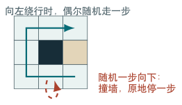
困难三：数据来自另一个策略。 设 S7 处产生数据的策略上、左各半，想评价的策略八成向上、两成向左，其余各格两者相同。直接平均采得的回报得到 ，这是产生数据那个策略的价值；想评价的策略的价值是 ，要换一种平均法。一步目标里只有一个后续动作，可以直接按想评价的策略求和或取最大（6.2 节末、6.3）；整回合回报里每个后续动作都由产生数据的策略抽出，只能逐条改权重（6.7）。此外，取最大会把估计里偏高的噪声挑出来，6.5 节处理这个偏差。
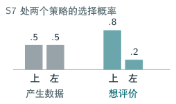
不同意见 对困难二有两种相反的看法。一种认为训练时的随机步只是手段，部署时关掉，所以要估计的价值应当去掉随机步。另一种认为，若智能体部署后仍要一直探索，比如环境会变、需要继续学习，带随机步的价值就是实际得到的回报。取哪种要看部署时是否还保留探索。
本章对应 Sutton 与 Barto 第 6 章；离策略的蒙特卡洛方法取自 §§5.5–5.7。在这些方法之外，本章多讲清两件事。第一件是为什么要离策略。三种动机是：边探索边学不探索的策略；重用旧数据或别人的数据；一条经验流回答许多问题。三种动机都要求产生数据的策略与被学习的策略分开。第二件是数据由谁产生、目标按谁平均的二维图，它说明哪些方法要乘概率比、哪些不要。6.2 节末用五小节把从同策略到离策略的过渡按问题、变化、困难、方法的顺序走一遍。本章用到第 3 章 3.4 节的动作价值与最优策略、第 4 章 4.3 节的策略改进定理、第 4 章 4.2 节的收缩论证，以及第 5 章 5.1、5.2 节的蒙特卡洛与 TD(0) 目标。
把前面的说法写成正式的问题，就是下面这个设定。
本章问题 给定：一个有限的回合式任务，转移规律 未知；智能体只看得到自己走出的记录 。求：评价问题求目标策略 的动作价值 ；控制问题求最优动作价值 与对它贪心的策略。假设： 或每个回合必然结束；覆盖条件 （6.1 节末）。相对第 5 章，估计对象从 换成 ，产生数据的行为策略 也可以不是被评价的目标策略 ；同策略是 的特例。
记号上， 是第 步的状态，是随机变量；S4、S7 是格子的名字，是 可取的值。课件这一页的图画了两个框：左框是行为策略 ，它在环境里实际选动作，产生一条条转移；右框是目标策略 ，用这些经验评价它的动作价值，再按估计改进它。两个框合成一个，就是同策略的情形，6.2 节的 Sarsa 与 6.6 节的蒙特卡洛控制属于这一类；两框分开是离策略，6.3 节的 Q-learning、6.5 节的 Double Q-learning 与 6.7 节的重要性采样属于这一类。控制时 通常由 加上探索得到，比如对当前估计取 -贪心，所以两框之间还有一条联系。困难三里的 与 是本章的主算例，6.7 节开头第一次正式用到它们。
第 5 章的 TD 目标 移到动作价值上以后，环境后果 仍取自一次实际转移，差别只在后继动作怎样进入目标：
整回合回报 中的后续动作全部由 抽出，用它评价 时要乘轨迹概率比 。
每一节处理前一节的方法留下的困难：
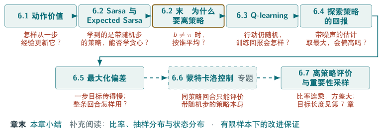
| 节 | 方法 | 解决的困难 | 留下的困难 |
|---|---|---|---|
| 6.1 | 动作价值；行为策略 与目标策略 | 无模型时用 比较动作；区分产生数据与被评价的策略 | 还需要从单条转移更新 的规则 |
| 6.2 | Sarsa 与 Expected Sarsa | 一步更新 ；Expected Sarsa 去掉下一动作的抽样方差 | 时目标含探索的后果，学到带探索的策略 |
| 6.3 | Q-learning 与最优 Bellman 方程 | 目标取 ，行为仍可探索；条件均值为 | 训练中执行的仍是探索行为，回报可能更差 |
| 6.4 | 探索策略与贪心策略的回报 | 分开报告训练回报、冻结贪心策略与带探索执行的价值 | 带噪声的估计取最大，会不会偏高 |
| 6.5 | 最大化偏差与 Double Q-learning | 一张表选动作、另一张表估值，去掉同一组噪声造成的偏高 | 一步目标传得慢；整条回合的样本怎样用于控制 |
| 6.6 | 蒙特卡洛控制与策略改进 | 用完整回报评价 ，在 -软策略类中改进 | 同策略回合只能评价带探索的行为本身 |
| 6.7 | 离策略评价与重要性采样 | 先说明概率比在什么条件下成立，再用 改变轨迹权重 | 连乘，方差随路径变长增大，可为无穷；目标长度的选择见第 7 章 |
6.6 节是专题，跳过它的读者从 6.5 直接读 6.7 也能接上。各节之后单列“本章小结”：先用一张四格图把本章方法归位，再给一步目标与整回合方法的对照和自测。两组补充阅读不在主线上：一组讲各目标里的随机量按什么分布抽样、以及动作比率管不到的状态分布；另一组讲蒙特卡洛控制在有限样本下何时能保证改进。
不同意见 有人认为控制应从蒙特卡洛控制讲起，像教材那样先用整回合把评价—改进的循环讲完，再引入 TD。本章把 TD 控制放在前面，因为泥地上的一步目标可以手算，蒙特卡洛控制放在 6.6 节。先讲蒙特卡洛，概念更干净；先讲 TD，更接近实际使用的算法。两种顺序都有道理。
6.1 动作价值、行为策略与目标策略课件
已知模型时，状态价值 配合转移与奖励模型，足以计算各动作的一步后果。模型不可查询时，仅有当前策略的状态价值，还不能完成这种前瞻比较。选择动作可以依据动作价值、参数化策略或环境模型；本章采用基于价值的控制，为每个合法状态动作对保存估计 ，它估计的是下面定义的量。
动作价值 策略 下状态动作对 的动作价值，是在 先执行指定的动作 、从下一个状态起按 选动作时回报的期望：
条件里同时有状态 和动作 ：第一步执行的 不必是 会选的动作，从下一个状态起才按 行动，这一点容易漏掉。把各动作的 按 的概率加权，就回到第 3 章的状态价值：
模型已知时，第 4 章由模型和 算出各首动作的价值；模型未知时，就用各首动作的经验估计 ，再比较同一行的估计 。
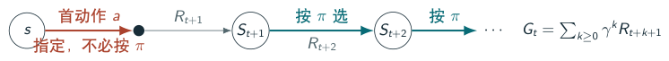
记 为第 5 章的旧策略：S7 向上，其余各格按第 5 章的箭头。动作价值把首动作列入条件，S7 的两条路线因此可以直接比较，当前策略不会选择的动作也能评价。指定向左后，再走五步到达终点，只有末步得 ，每次回报都是 。指定向上会进入泥地 S4，之后每次尝试向上都有 的概率抵达终点。若失败 次才成功，回报为 。因此两条路线有
第二个和式是公比 的几何级数，。 是旧策略的起点价值。离开 S7 以后两条路径都不会再返回起点，所以若仅把 S7 的箭头改成向左，改后策略的价值等于左路的 。这两个数是按任务规律算出的真值；学习器只看到样本，单次试走并不保证识别这个差距：第一次便穿过泥地时，向上得到 ，高于绕行的实际回报。
控制的最终目标是最优动作价值 ，即第一步指定动作 、此后选择最优动作时的期望回报。完整回合给出回报样本，一步转移也能结合对后继的估计更新 。这些方法都需说明采到了哪些首动作，以及后续按什么策略行动。
行为策略与目标策略课件
行为策略产生数据，目标策略规定被评价的后续。行为策略 决定实际采样的动作，因而决定收集到哪些经验。目标策略 规定要评价的行动规则。评价状态价值时，从当前动作起遵循它；评价指定首动作的动作价值时，下一次决策才遵循它。 是价值估计， 是动作概率；控制中可以由 导出两种策略，但它们承担不同角色。
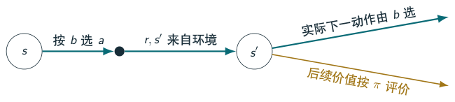
同策略与离策略 当 时，称为同策略（on-policy）学习：所学价值包含实际探索的后果。允许 与 不同时，称为离策略（off-policy）学习：利用一种行为的数据学习另一种后续行为的价值。用 的数据评价 ，要求 覆盖 （本节末）。
目标策略可以不是最优策略。Sarsa 以实际探索行为作为目标，是同策略；Q-learning 以当前 的贪心策略作为目标，是离策略。同一个探索策略可以一边收集经验，一边学习贪心策略的价值；同一批记录也可供几个候选策略分别作评价。要利用这样的经验，须先辨认更新中取样的量。给定 ，下一奖励和状态服从相同的环境律 ；再取后续的一段回报，里面的动作却按 产生。一步 Q-learning 直接对表中的动作价值取最大，整回合评价则要恢复目标策略的路径概率。
离策略规定谁生成数据、按谁评价后续。在线训练还可取得新的转移，离线训练使用指定的数据集。在线探索、旧策略的回放和固定数据分别给出了不同的采样条件。
易错 离策略只要求目标后续可以与行为不同，并不要求行为停止探索。Q-learning 学贪心目标，实际执行的仍是 ，探索的代价照样出现在训练回报里（6.4 节）。离策略也不等于离线：在线学习同样可以离策略。
不同意见 有人认为严格的离策略很少需要：实际系统的数据多来自稍早版本的自己，行为与目标只差几步更新，近似当作同策略就够了。这对大量在线训练成立；但一旦要重用很久以前的数据，或者用一条经验流同时学许多目标，两个策略的差别就大到不能忽略。前者见第 10、12 章的经验回放与固定数据，后者见第 19 章的通用价值函数。
贪心选择与随机探索
若总选当前 最大的动作，估计偏低的动作可能一直得不到新数据。-贪心为每个合法动作保留尝试机会。令 为状态 的合法动作数， 为并列最大动作的集合，定义
每次行动有两种选择方式。以概率 在全部合法动作中均匀抽样，以概率 在并列最大动作中均匀抽样。探索也可能抽中最大动作。四个动作、 且左为唯一最大动作时，左的概率是 ，其余三个各 ，按上、右、下、左为 ；四动作并列时各为 .25。
后面各节反复用到泥地 S4 上的一张表：当前 在上、右、下、左四个动作上为 ，向左唯一最大， 时 就是上面的 。这张表是学习中途的估计：S4 的左边是墙，向左只会原地不动，估计还没学对。-贪心照估计行事，要靠那两成随机步才有机会纠正它。
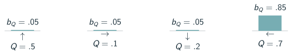
-软策略 每个动作被选的概率都不低于 的策略称为 -软策略；-贪心是其中最贴近贪心的一种。
这个名字在后面多处出现：6.2 节末说 Sarsa 停在最好的 -软策略上，6.6 节说蒙特卡洛控制在这一类策略里改进。6.2 节里 Sarsa 用的策略就是这个 ，数据和目标是同一个策略。
不同意见 有人认为 -贪心的探索太盲目：它以同样的概率试最差的动作和次好的动作。按价值大小分配概率的 softmax，或按不确定性给动作加分的置信上界方法（第 2 章），探索更有方向。本章仍用 -贪心，因为它的覆盖性质一句话就能说清：每个动作的概率至少是 ，后面的收敛条件和比率计算只用到这一点。
行为策略的覆盖课件
行为策略决定能观察到哪些转移。用 的数据评价 时，凡是 会选的动作， 都得有机会选到，否则数据里根本没有这个动作的后果。
覆盖 若目标策略会选的动作，行为策略也以正概率选，即对所有
就称 覆盖 。
-贪心给每个动作至少 的概率，所以覆盖任何 。反例是在 S7 总是向上的行为：它永远给不出向左的记录，要评价一个会在 S7 向左的目标策略就没有数据。课件这一页的右图在 S7 并排画了两组柱，灰柱是行为策略、绿柱是目标策略；凡有绿柱的动作灰柱都不为零，覆盖就成立，下方反例里绿柱所在的左没有灰柱，覆盖失败。
覆盖只保证有机会看到。在 S4， 选上的概率是 ，向上又以 的概率到达终点 G，所以在第 步得到在 S4 向上并到达终点这条记录的概率是
给定已经在 S4，这个概率是 ；还没到 S4 时，要再乘上该时刻访问 S4 的概率。访问本就稀少的状态，即使在当地对每个动作都保留探索，也可能要很多步才出现一次这样的记录。终点格记作正体的 G，回报写作带时间下标的 ，两者不会混淆。
能否产生目标所需的轨迹，与手头的有限样本是否已包含它，是两个问题。在 S7，若行为以 向左，左路有机会被访问，但五个独立回合仍可能恰好都向上，概率为 。
Sarsa 和 Q-learning 都可用 收集经验。它们在同一条转移上作出不同的假设：从后继状态起会继续探索，还是总取贪心动作？
6.2 Sarsa 与 Expected Sarsa课件
同策略控制里，产生数据的策略就是被评价、被改进的策略。为了让每个状态动作对都被持续访问，策略必须给每个动作留下正的概率，于是我们先把讨论限制在下面这一类策略中。
-软策略 取定 ，-软策略的集合是
第 步的策略 取表 的 -贪心策略，它属于 ；行为 ，要找的是 中最好的策略。
先讲同策略，是因为这种情形下目标不需要校正。一步目标里只有两处随机：环境给出的 ，以及策略抽出的下一动作 。前者在任何策略下都服从同一个 ；后者服从 ，正好是被评价的策略。于是目标的条件期望就是 的 Bellman 算子作用在当前表上：
样本平均的方向因此是对的，没有要校正的项。代价是学到的价值包含了试探：泥地 S7 向左的动作价值在同策略下是 ，若之后不再试探，真值是 （本节末“Sarsa 停在哪里”给出这两个数的来历）。要学后一种价值，必须让目标策略与行为策略分开，这是本节末几个小节的内容；分开以后需要概率比的条件见本节末“谁产生数据，按谁平均”，整回合回报的校正见 6.7 节。
课件用一张循环图概括同策略控制：图顶标着 ，当前策略是表的 -贪心策略，它产生五元经验；用这条经验更新 ，再对新表取 -贪心，得到下一步的策略，回到图顶。控制因此是评价与改进的交替：用经验把 推向 ，再对新表取 -贪心。-贪心改进在 内不降低价值（6.6 节给出论证），所以这个过程找的是 中最好的策略，它一般不等于不试探时的最优策略。
不同意见 有人认为同策略方法只是离策略方法在 时的特例，单独成节多余。从算法看确实如此；但同策略是唯一一种目标里可以直接使用采样动作、不需任何校正的情形。把它单列出来，后面每一种离策略方法都可以回答同一个问题：它用什么办法补回 时丢失的那部分正确性。
Sarsa 以实际下一动作构造目标。在 执行动作，收到 ；若 未终止，同一策略再选 ，形成五元经验 ，算法的名字就来自这五个字母。目标与更新是
是目标的自举项，即第 4、5 章目标中代替后续回报的那一项。 还会在下一步实际执行；只要后续仍有探索，探索动作的价值也会进入预测。
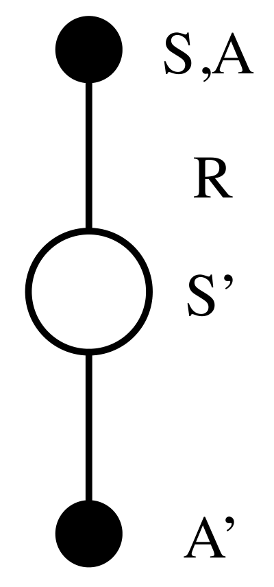
泥地记录 上，若在 S4 探索向上、旧表 ，本次目标为 ；若到终点则取 。控制可以让行为对当前表作 -贪心，再用更新后的表决定更晚的选择；已经进入本次目标的下一动作则应保留并执行。完整的回合版本如下，每次选动作都用当时 的 -贪心 ，给定 与初值 。
算法 6.1 同策略 Sarsa 控制
- 每回合：取得非终止初始状态 ；采样 。
- 重复：执行 ，观察奖励 与下一状态 。
- 若 是终点：，跳过第 4、5 行。
- ，使用更新前的 。
- 。
- 。
- 若到终点，本回合结束；否则 ，回到第 2 行。
算法框的读法是： 的条件均值是 ，即用当前表回代一步；Sarsa 每一步把 往这个均值挪一点。固定 时，整张表的方程 只有一个解 ；单个格子上 成立还不够。这里有三个量要分开：目标的均值 、当前估计 、真值 。只有到了不动点， 等于它自己回代一步的结果，此时三者才相等。控制中 随 而变，所以 追踪的是不断改进的行为，任一时刻都不必等于其真值。
几处细节决定算法是否正确。第 4、5 行都在第 6 行之前，所有目标量来自同一次旧 快照；即使发生自环，也读取同一份旧表，并保留已采的后继动作。终点之后的价值记为零，所以第 3 行到终点时目标只剩即时奖励，先用它更新再退出。若回合只是因为步数上限被外部截断，而环境并未真正终止，自举项仍须保留。
不同意见 有人认为用实际下一动作是 Sarsa 的缺点：目标里多了一次动作抽样的随机性，Expected Sarsa 把它平均掉，方差更小（下一小节）。也有人认为这是它的长处：Sarsa 不需要知道策略的概率，只需要知道实际做了什么；动作即使由人或别的程序决定，只要评价的就是那个行为，Sarsa 照样可用。
Expected Sarsa：对下一动作求平均
Expected Sarsa 对下一动作求平均，消去这一步的动作抽样方差。在 Sarsa 中，给定旧 和下一状态后，随机量 的均值可以直接由动作概率求出；用这个均值代替抽样的自举项，就得到 Expected Sarsa 的目标
它仍采样环境后果，只消除了下一动作选择引入的条件方差。
用 6.1 节末的 S4 表算一遍。固定本次更新的 和行为策略 （ 的 -贪心），已观察到 ，奖励为 。S4 上四个动作的值按上、右、下、左依次为 ， 的概率是 。下一动作按 采样，Sarsa 的目标 有四种取值 。本例目标策略取同一个策略，，Expected Sarsa 的目标是
Sarsa 目标的均值也是 ，二阶矩是 ，所以给定本次奖励和后继状态，它的动作抽样方差约为 ；Expected Sarsa 在这一条件下是确定量，方差为 。一般情况下，环境结果带来的方差仍然存在。
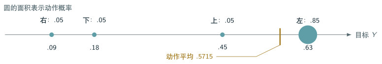
从这里起， 只指要评价的策略， 只指产生数据的策略。本例里二者恰好相同；本节末“分开之后的困难”沿用同一组概率作为行为策略 ，目标策略换成另一组。
对固定的 ，记
它就是第 4 章按 做一次期望更新的 ，只是对象换成动作价值表，下一状态的价值用 对 的加权平均代替。给定旧 与 ，Expected Sarsa 目标的均值等于 。给定 与初值 ，算法如下（Sutton 与 Barto §6.6）。
算法 6.2 Expected Sarsa
- 每回合：取非终止初始状态 。
- 重复：按 选 并执行，观察 与 。
- 若 是终点，；否则 （用更新前的表）。
- ；到终点则结束，否则 。
- 控制时： 改为新 的 -贪心，回到第 2 行。
固定目标策略时，这是预测；令目标策略持续对 作 -贪心并取行为等于目标，得到同策略控制。与 Sarsa 不同，它不需要预先抽取并保存用于自举项的下一动作。第 3 行的终点指回合真的结束；所有 与策略概率都从本次更新前的快照读取，自环时也不让正在更新的表项改变目标。
课件在算法旁画了同一个 处的四条分支，权重沿用上面的 S4（上、右、下各 ，左 ）：Sarsa 只沿抽到的一条走（图中抽到的是向上），Expected Sarsa 把四条按 加权。下面的回溯图表达同一件事。
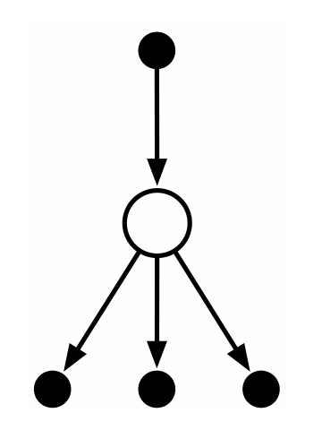
目标策略也可以与行为不同。给定 后，环境核不变，而后续动作已在目标中按 显式求和，没有按 抽出的后续动作，所以 时也不需要为下一动作乘重要性比率；算例见 6.7 节“比率换掉分布”，位置见“谁产生数据，按谁平均”。若 只在最大 Q 动作上分配概率，就有
此时 Expected Sarsa 成为 6.3 节的 Q-learning。这里的动作和是在已观察到的后继状态上求的；即使目标只选最大动作，下一转移中的奖励与后继仍有环境随机性。
Sarsa 停在哪里课件
Sarsa 的估计停在带试探的价值上，S7 向左是 ；只要行为一直试探，它就到不了不试探时的 。原因在目标里：行为按 -贪心行动，、四个动作，每一步以 选当前最好的动作，其余三个各 ，合起来有 的概率是试探。目标 里的 也按这个规则抽出，以后的试探就被平均进价值。
本课的模拟：泥地，，从 S7 出发，到终点后回到 S7；表格 Sarsa，，所有动作价值初值为 （乐观初值让两条路都被走到），独立重复 次。 时 S7 两个动作的估计（ 次运行的均值）如下：
| 真实转移数 | 2000 | 4000 | 6000 | 10000 | 15000 | 20000 |
|---|---|---|---|---|---|---|
| Sarsa 的 | ||||||
| Sarsa 的 |
两万步后，八成运行的向左估计落在 到 之间， 的运行在 S7 选向左，箭头已经对了；可向左的估计停在约 ，低于不试探时向左的真值 。差出来的约 不随步数变小，它是 Sarsa 要估计的那个量本身：先向左，以后每一步仍以 的概率试探，这样走下去的价值。用下一小节的方程精确解出这个量，是 。向上的估计停在约 ，也低于不试探时的 ；试探把每个动作的价值都拉低了，在泥地上没有改变排序。
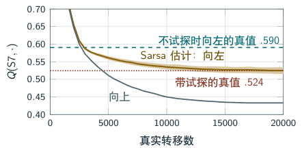
换几个 再跑，取第 万到 万步的平均，与带试探的精确值相差不到千分之一：
| Sarsa 停在 | — | ||||
| 带试探的真值 |
试探越少，停得越高，只有完全不试探才到 ，可那时数据也断了。后文只用精确值，模拟的 只在这里出现。还有两个数要分开：按 -软策略走，S7 的状态价值是 ；在 S7 先选左、以后按软策略走的动作价值是 。状态价值还要把 S7 这一步本身的试探平均进去，所以更低；本章后面只用这两个数。同一设定下把目标里的 换成 ，估计停在 ，这是 6.3 节的 Q-learning。
不同意见 有人认为这里的差距无关紧要：控制关心箭头，箭头对了就够了；让 随时间减小到零，Sarsa 也收敛到最优。前一点在泥地上成立，在悬崖上不成立（6.4 节，试探下贴边的路更危险，Sarsa 选了远离悬崖的路）；后一点在固定环境、表格表示下成立，可 降多快要事先定，降得太快会过早停止探索，环境会变时探索就不能停。还有人指出，若部署时也要保留试探，比如为了继续学习， 才是实际会得到的价值，Sarsa 学它恰好合适。
软策略的上限课件
表格 Sarsa 在 固定时若收敛，就停在最好的 -软策略上：S7 只值 ；不受软策略约束时，S7 可得 。要说明这一点，先写出停点满足的方程。 固定时表格 Sarsa 是否一定收敛，没有一般的证明；本小节只说明，若它停下，停在哪里。Sarsa 的更新在平均意义下停下，要求目标的期望等于估计本身，；下一动作按 -贪心从当前 抽出，以 的概率取最大的那个，另以 的概率在全部动作里均匀抽，平均起来是
代回停点条件，得到软策略的最优方程
这个方程与最优方程只差一处： 换成了 与均值按 比 的混合。泥地上，S7 先向左、以后按这条软策略走，动作价值是 ；S7 的状态价值是 。
这个停点就是最好的软策略，理由分两步。第一，解唯一： 与均值的凸组合对 是 sup 范数下不扩张的，再乘 ，右端就是一个 -压缩，由第 4 章 4.2 节的论证，方程有且只有一个解。第二，Sutton 与 Barto §5.4 把 的随机性移进环境：在新环境里，智能体选定动作后，环境以 的概率把它换成均匀随机的动作。原书指出，新环境中用一般策略能做到的最好，等于原环境中用 -软策略能做到的最好；原书写出的是新环境的状态价值最优方程，换成动作价值就是上式。所以它的解是原环境里最好的 -软策略的动作价值，也就是每个动作至少保留 的概率这个约束下的最优。整回合的蒙特卡洛控制（6.6 节）在同一个约束下改进，停在同一条策略上，那里给出改进不降低价值的证明。
泥地上取 、四个动作，用这个方程直接求出的最好软策略，每格以 走箭头，其余三个方向各 ，箭头恰好与不探索的最优策略相同。下表是按这条策略走的状态价值（，本课对泥地模型的精确计算）：
| S1 | S2 | S3 | S4 | S5 | S6 | S7 | |
|---|---|---|---|---|---|---|---|
| 箭头 | |||||||
| 最好的软策略 |
S7 的精确值，只走箭头时是 ，即 ；按软策略走约 。上一小节的 是 S7 先向左、以后按软策略走的动作价值。两个数都是策略真值，差距来自每格那 的试探概率，不来自估计误差。
于是出现两难：停止探索，数据就断了；继续探索，同策略方法学到的就是 那一侧的价值，动作也按这些价值比较。悬崖任务（6.4 节）中，两者选出的路甚至不同：探索时离悬崖远一些更安全，同策略因此学到绕远的路。出路是把两件事分给两个策略：探索的行为策略 产生数据，被学习的目标策略 不探索。
不同意见 有人认为不必引入离策略：让 随时间趋于零（文献中称 GLIE 条件），同策略的 Sarsa 在表格情形下也收敛到最优（Singh 等，2000）。这在固定环境、表格表示下成立。困难在于 降多快很难事先定，降得快会过早停止探索；环境若会变化，探索就不能停。离策略方法把怎样收集数据和学哪个策略分开，两件事可以各自调。
已经解决的。 上面的方程有唯一解，它是全部 -软策略中最好的那一条的动作价值。 随时间趋于零、每个状态动作对被试无穷次（GLIE），步长满足 Robbins–Monro 条件时，表格 Sarsa 以概率 1 收敛到 （Singh、Jaakkola、Littman 与 Szepesvári，2000）。
已有工作。 Singh 等 (2000) 的证明把 Sarsa 写成随机逼近，平均方向是随时间变化的算子 ，要求它在极限处变成 。Expected Sarsa 去掉下一动作的抽样方差，平均方向相同。
没有解决好的。 固定时，行为 随 变化，平均方向 对 不连续：两个动作的估计交换大小时，行为概率跳变。所以上面的收缩论证只说明停点唯一，不说明样本更新一定走到停点。本章模拟中泥地的估计停在 附近，是一个任务上的观察，不是一般结论。
怎样检验。 在泥地与悬崖行走上操控 与常步长 ，以上面方程的精确解为基准，测量 随步数的变化，以及贪心动作切换的次数。重复单位是独立运行。可以证明的方向是：在什么条件下，-贪心的平均方向在停点附近仍是压缩。
为什么要离策略课件
要求 与 分开的，不只上面这一种情形。常见的有三种：
| 情形 | 产生数据的 | 被学习的 |
|---|---|---|
| 边探索，边学不探索的策略 | -贪心，保持试探 | 当前表的贪心策略 |
| 用旧数据或别人的数据 | 过去的自己、别的程序或人 | 现在要评价或改进的策略 |
| 一条经验流，许多个问题 | 机器人实际的行为，只有一个 | 许多个如果按某策略做下去会怎样的问题 |
第一种情形就是前两个小节：同策略只学到软策略，S7 最多 ，要的是 那一侧。第二种情形是重用数据。经验回放把过去的转移存起来反复更新（Lin，1992；Mnih 等，2015）。存进去的转移由当时的策略产生，现在要改进的却是新策略。离线数据的差别更大：医疗、推荐等系统的历史记录由过去的人或程序产生，现在要不经试验就评价新策略。大语言模型的强化学习训练中，为了让生成与更新同时进行，生成样本的参数常落后几步；严格说，这也是离策略的数据。第三种情形来自 Horde 架构（Sutton 等，2011）。机器人只有一条感知与动作的经验流，却要并行学习许多预测性的知识。每条知识形如：如果按某个策略做下去，某个信号会怎样；例如问一直前进多久会碰到障碍（这是本课为说明而举的例子）。行为只有一个，目标策略却有许多；每个目标策略都只能用离策略方法从同一条经验里学。
三种情形的结构相同：上游是产生数据的策略，中间是数据，下游是被学习的策略。下面三幅示意图依次是一对一、多对一、一对多。共同之处是：数据由 产生，要学的是 的价值。 时称同策略，第 5 章的方法和 Sarsa 都是； 时称离策略，6.3、6.5 与 6.7 节都属于这一类。第 5 章末的方法表里，“数据由谁产生”一列只有一个答案，本章放开这一条。
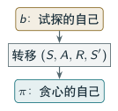
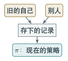
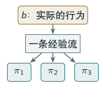
不同意见 有人认为第二、三种情形的困难被低估了。离策略数据的覆盖可能不够；再加上函数逼近与自举，更新可能发散（第 9 章的致命三元组）。所以实践中常用近似同策略的做法，例如只回放最近的数据，或者限制新旧策略的差距。这些做法有效，但它们也是离策略设定里的折中；前提仍是先把两个策略分清。
分开之后的困难课件
把两个策略分开，数据却仍跟着 走：直接平均，得到的是 的价值； 要走而 从不走的动作，没有数据。仍在泥地上，设已经从 S7 走到 S4，表里四个动作的值是上 、右 、下 、左 ，行为策略 （上、右、下、左），这些数沿用上面 Expected Sarsa 的例子。这里另设一个目标策略 ：在 S4 以 向左、 向上，从不向右或向下。它是为说明而新设的例子，和前面贪心的目标策略、6.7 节轨迹算例的目标策略都不同；6.7 节“比率换掉分布”回到它。
困难一：平均落在 上。 直接用采到的下一动作的值，每个值出现的频率就是 的概率，平均是
想要的是 。样本再多，平均也只会越来越准地接近 ，因为偏差来自频率本身。
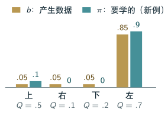
困难二：覆盖。 若 从不向上，而 有 向上，向上之后得到什么，数据里一个例子也没有，任何改权重的办法都无从下手。所以离策略学习要求 时 ，即 6.1 节末“行为策略的覆盖”中的条件。
两条出路。 第一条是不采样：一步之内， 的概率和 都已知，直接求和就是 ，没有方差。Expected Sarsa 在 时就这样做； 取贪心时，求和变成取最大，就是 6.3 节的 Q-learning。可这只对一步有效，整回合的回报里还有以后的许多动作和环境的随机后果，没法逐一求和。第二条是采样以后改权重：每个样本乘上 ，频率就从 的换成 的，代价是方差；6.7 节先在 S4 上算这一步，再把它用到整段轨迹。
不同意见 有人认为覆盖条件太苛刻：真实的离线数据里，新策略想做的事常常从没被做过，比如医生从未开过的处方。这时两条出路都失效，需要别的假设，例如对没见过的动作保守估计，这是离线强化学习的一条主要思路。也有人认为第一条出路不只限于一步：有环境模型，就可以把以后的动作和后果都求和，这就是第 8 章的规划。本节只讨论没有模型、数据又覆盖了 的情形。
谁产生数据，按谁平均课件
目标按谁平均，就用谁的概率；动作由 抽出、目标却要按 平均时，才乘比率。课件把本章的一步与多步目标按两个问题摆成一张二维图：横轴问目标里的后续动作怎样处理，用实际采到的动作，还是按 的概率求和或取最大；纵轴问目标读几步，一步自举，还是多步乃至整回合。下表按这张图的四格列出：
| 后续动作：采样（左列） | 后续动作：按 求和或取最大（右列） | |
|---|---|---|
| 一步 | Sarsa。数据由 产生时，采到的 乘 ：S4 上不乘得 ，乘了得 （6.7 节细算） | Expected Sarsa、Q-learning：直接求和得 ， 取贪心得 |
| 多步或整回合 | 整回合回报：后续动作都由 抽出，乘 （6.7 节） | 树回退（Sutton 与 Barto §7.5）：多步而不用比率 |
左列是采样的一列，在课件图中以红底标出：数据由另一个行为策略产生时，要给采到的动作乘比率；数据由目标策略自己产生时，四格都不需要比率，Sarsa 就是这种情形。右列的目标已经写进 的概率，不管数据从哪里来，都不需要比率。
只看后续动作的理由，可以从左到右逐个位置检查目标里谁在抽样。条件中给定的状态和首动作 不需校正，因为要估计的就是以它们为条件的价值。环境给出的奖励和后继状态，分布只取决于状态和动作，在两种策略下相同，在轨迹比率中约去（6.7 节会看到这一步）。由行为策略抽出的后续动作要校正；目标在某处对动作求和或取最大，那里没有抽样，也就没有要校正的东西。
一步目标容易放进右列，因为只有一个后续动作，求和只要查四个数。整回合回报一直读到终止，包含之后所有的动作和环境后果，环境部分本来就只能采样，没法对整段轨迹求和；评价另一个策略时只能落在左下格，把从 到 的比率乘起来，这是 6.7 节的情形。第 7 章的多步方法介于两者之间，同样要回答这两个问题。
不同意见 有人认为这张图把有没有比率说得过于黑白。右列的 Q-learning 虽然没有比率，但在函数逼近下，更新所在的状态分布仍来自 。这一偏差没有被校正；它与自举、函数逼近合在一起，更新可能发散（第 9 章的致命三元组）。实践中也常只对部分动作乘比率，或把比率截断（如 Retrace、V-trace），代价是偏差。表格情形下，这张图的结论是准确的。用到函数逼近时，还要再问状态分布由谁决定；本章末“补充阅读：比率、抽样分布与状态分布”回到这个问题。
6.3 Q-learning 与最优 Bellman 方程课件
上一节末的第一种动机是：要学 一侧的贪心策略，又不能停止探索。Q-learning 的做法是边探索边学贪心策略，行为照常试探，目标取最大值。在“谁产生数据，按谁平均”的图里，它位于一步、右列的那一格。目标策略取当前表的贪心策略 ，后续动作的平均就是 ；行为策略 仍可探索。所以 Q-learning 是离策略方法。它的目标与更新是
计算目标不需要先采出下一实际动作，也不要求下一步实际执行最大动作；终止分支的自举项取 0。
泥地上，Sarsa 停在带试探的 （6.2 节“Sarsa 停在哪里”），Q-learning 停在贪心策略的 ，即第六步到终点得 1。同一模拟设定（表格，，初值 1，，300 次运行）下，把 Sarsa 目标里的 换成 ，S7 向左的估计约 步后就停在 。用一条记录手算： 后，S4 的表值按上、右、下、左为 ，，写回的是 。下一步即使行为探索向上，这个目标仍然读取 S4 向左的最大值。
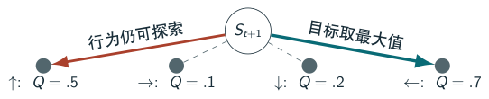
易错 规定被评价的后续是当前表的贪心策略 ，不表示 已等于 ，更不表示已等于 。 随 变化；收敛到 的论证在本节后面给出。
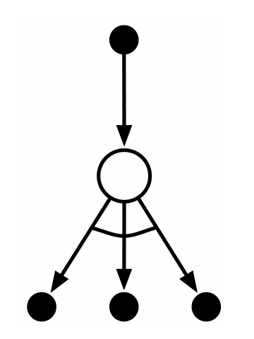
不同意见 有人认为取最大值的目标过于乐观：估计有噪声时，取最大会偏高（6.5 节）；行为又一直在试探，训练中实际拿到的回报可能比 Sarsa 低（6.4 节悬崖）。两点都成立。Q-learning 学到的是停止试探以后的价值，训练期间实际执行的行为得不到这个价值。
下面是 -贪心行为的表格版本，给定步长 、折扣 和初值 。
算法 6.3 表格 Q-learning
- 每回合：取得非终止初始状态 ；采样 。
- 重复：执行 ，观察奖励 与下一状态 。
- 若 是终点：，跳过第 4、5 行。
- ，使用更新前的 。
- 。
- 。
- 若到终点，本回合结束；否则 ，按新 采 ，返回第 2 行。
第 4 行枚举后继动作，得到贪心目标；第 7 行按 选择实际动作，仍可探索。与 Sarsa 相比，状态转移、更新位置和终止分支都相同，差别只在目标取最大，而不用随后实际执行的动作。经典 Q-learning 在更新后选择下一行为动作；提前采好也可以，但这个动作不进入 目标。Q-learning 一般允许其他满足覆盖条件的行为策略；还要注意，正的 本身并不自动保证全部状态动作被无限次访问。
选读：下一动作的两种用途。 Sarsa 的下一动作既进入目标又被执行，Q-learning 的只被执行。两者先得到同一转移 ， 未终止；此后 Sarsa 先按 采出 ，用 更新 ，再执行这个 ，即使 在执行前已经改变，已采的动作也要保留；Q-learning 取 更新，更新完才按新的 采样并执行。Expected Sarsa 与 Q-learning 一样，可以先更新再为环境采下一动作，因为它对下一动作求和，环境后果仍采样。改变探索率，两者的实际数据与回报都会改变；Sarsa 的目标还包含这种探索的后果。
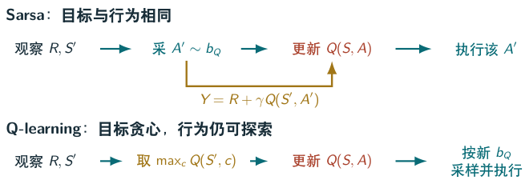
Sarsa、Expected Sarsa 与 Q-learning 的目标
同一条转移上，三种目标分别得 、、。固定 及旧表：在 S4，，行为策略 的概率为 ，折扣 。三种目标可以合写成 ，只是后续项不同：
- Sarsa 采一次 ，这次向上，后续项是 ，。
- Expected Sarsa 取 ，全部动作按它加权，后续项是 ，。
- Q-learning 取最大值，后续项是 ，。
前两种的条件均值相同：Sarsa 的单次目标可能偏离同一策略下的动作平均，Expected Sarsa 读完整行，消除了给定这条转移时下一动作的抽样方差。Q-learning 改用贪心后续，被评价的后续策略已经不同，所以不能把 与 的差距解释成抽样方差；它的行为下一步仍可探索。若目标策略只在所有并列最大动作上分配概率，Expected Sarsa 的目标正好等于 Q-learning。三个目标保留同一份已发生的奖励 0 和同一个 S4 泥地机制，都以 更新 ；这张 Q 表只为演算，数字不是这些方法已经学得的真值。
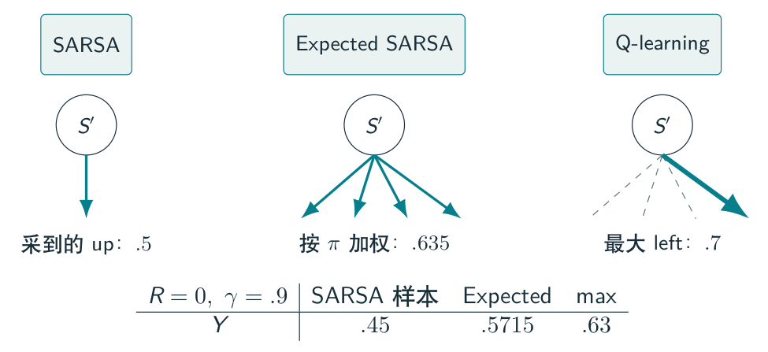
难点在于分清两种差别：Sarsa 与 Expected Sarsa 的均值相同，只差下一动作的抽样方差；Q-learning 换了后续策略，差在均值。上图数轴上四个圆是 Sarsa 的四种可能目标，面积与 成正比，金线是 Expected Sarsa，红线是 Q-learning；下图横轴是 ，虚线是 Sarsa 目标的均值加减一个标准差。 时点“抽 100 个”，样本平均落在 附近，Sarsa 目标的方差为 。拖动 ，金线与红线之差等于 乘以 S4 一行的最大值与平均值之差， 时三个目标都是 。
Q-learning 目标的条件期望与收敛条件
固定当前表时，Q-learning 目标的条件均值是 。先给出这个算子。
最优动作价值算子 对任意动作价值表 ，
终止分支的后继项取 0。
在马尔可夫环境中，固定当前表 和已经执行的 。行为策略只决定这一对出现的频率；给定它之后，环境决定下一次观测，最大值由查表得到，既不需要行为策略的概率，也不需要采出下一实际动作。于是有恒等式
减去 ，便得到这项样本误差的期望，即当前表项的最优 Bellman 残差。 是按最优方程做一次期望更新。第 4 章 4.5 节价值迭代每步用的就是它，这里只是作用在动作价值表上。价值迭代按模型对所有环境后果求和；Q-learning 用一次实际到达的后果代替这个求和。期望式以当前表和已选条目为条件，所以不需要对首动作乘概率比。
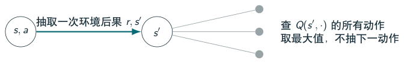
用泥地算一个条件均值。条件在 S4 向上，冻结的最大后继 Q 为 ：泥地以 的概率让智能体停留，目标为 ；以 的概率进入终点，目标为 。条件均值是 。这里模型只用于分析这个平均，学习器每次只接收实际的一条转移。
易错 把一步 Q-learning 目标当作 的无偏样本。它的条件均值是当前表的一次期望更新 ；当 时两者不同。表里有误差时，取最大会偏向误差碰巧偏高的动作：若重复训练得到不同的表，估得偏高的动作更容易成为最大值，6.5 节把这种偏高单独拿出来处理。
条件均值正确，还要说明反复做 会收敛到唯一的 。下面的证明与第 4 章 4.2 节对状态价值的收缩论证相同，只是对象换成了动作价值表。
命题（ 的收缩与不动点，选读证明） 有限折扣 MDP 中， 时 是 sup 范数下的 -收缩， 是它唯一的不动点，并且从任意 迭代 ，有 。
证明 任取两张表 。
- 两个最大值之差不超过逐点差的最大值：。依据：设 在 取到，则 ；交换 得另一侧。
- 奖励项相减抵消，概率 之和为 1：。
- 对 取最大，得 。
由 Banach 不动点定理， 有唯一不动点，迭代按 的速度靠近它； 满足最优方程 ，所以就是这个不动点（Sutton 与 Barto §3.6、§6.5）。
第一步是关键： 的最好动作在 里至少也有那么好减去两表在这个动作上的差，所以取最大不会放大两张表的差距。这个命题说的是期望更新 。Q-learning 每步只用一次采样，还需要每个表项被无限次访问、步长满足 Robbins–Monro 条件，才能保证收敛；行为策略决定哪些条目被更新，条件期望正确并不代替这两个条件。
定理（表格收敛条件） 设有限平稳 MDP、、奖励有界、表格表示，每个 被无限次更新。令 计该表项的更新次数（不是全局时间），步长满足
| Q-learning | Sarsa | |
|---|---|---|
| 访问与步长 | 每个 无限次更新，步长满足上式 | 每个 无限次更新，步长满足上式 |
| 行为策略 | 任意，只要满足上面的访问条件；不必变贪心 | GLIE：无限探索，且在极限中对当前 贪心，例如 |
| 结论 | （以概率 1） | ，策略趋于贪心最优（以概率 1） |
两列只有行为策略一行不同。Q-learning 的目标取最大，不依赖行为策略，行为只需把每个表项访问无限次；Sarsa 的目标跟着实际执行的策略走，行为策略要在极限中变成贪心，学到的才是 。GLIE 是 Greedy in the Limit with Infinite Exploration 的缩写，即极限中贪心且无限探索。固定 保留了探索，却不满足极限中贪心；反过来，让探索率下降过快，也未必保留每个表项的无限访问。
证明的思路是把 Q-learning 写成以 为平均方向的随机逼近：上面命题中的 -收缩给出唯一不动点，步长条件抑制噪声。原始证明见 Watkins 与 Dayan（1992）；Jaakkola、Jordan 与 Singh（1994）；Tsitsiklis（1994）。Sarsa 的 GLIE 条件与证明见 Singh、Jaakkola、Littman 与 Szepesvári（2000）。这些是渐近定理，不是有限训练步数的性能保证；共享参数会让一次更新联动多个表项，表格结论不能直接搬过去，见本章末“补充阅读：比率、抽样分布与状态分布”。
同一段经验中的一步目标与完整回报
一步目标不含后续动作，同一条记录的整回合权重却可以为零。设记录从 开始：到达 ，奖励为 0；行为策略在 S4 又向上试了一次，这次成功抵达终点，奖励为 1，折扣回报为 。固定旧表 ，其贪心策略 在 S4 选左；行为策略 在这里选了上。
一步 Q-learning 只采环境后果：到 S4 查表取最大 ，目标 ，S4 的实际动作不影响这个目标。整回合评价 还采了后续动作：首动作已经指定而不进入比率，第二个动作向上在 下概率为零，这条轨迹的比率 ，对普通重要性采样平均的贡献是零。它的第一步转移仍可用于 Q-learning。
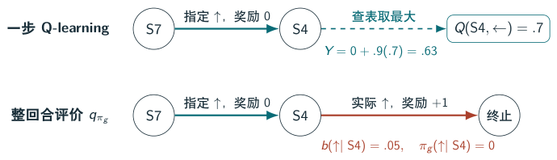
权重随目标策略而变。若另换 6.2 节末新设的目标策略，在 S4 以 向上、 向左（其余状态两策略都沿用泥地任务的旧策略），同一条经验的四种用法如下：
| 方法与后续策略 | 如何利用已发生的经验 | 此次取值 |
|---|---|---|
| Sarsa，继续按 行动 | 读取实际的下一动作，即向上，用它的当前价值作自举项 | |
| Expected Sarsa，评价这个 | 用 对当前的四个动作价值求和 | |
| 一步 Q-learning，贪心后续 | 在这四个估计中取最大值 | |
| 普通轨迹重要性采样，评价 | 保留完整回报，用实际后续动作的概率比加权 |
前三行是一次自举目标，拿到第一条转移后就能算出；Sarsa 还需要取得下一实际动作，完整回报法要等到终止。若 Expected Sarsa 的目标策略取行为策略 ，第二行回到前面的 。最后一行只在 S4 采了一次后续动作。指定首动作后，行为策略走出这条路径的概率为 ，目标策略下是 。两个乘积中的第二个 都是泥地向上成功的概率，在比率中消去，所以轨迹权重为 2。 是一条样本对普通重要性采样平均的贡献，回合实际取得的折扣回报仍是 。
一步 Q-learning 的条件均值只对环境后果 取期望，计算最大值时没有从行为分布抽取下一动作，也就没有下一动作的概率比。但覆盖仍然重要：如果行为从不选某个动作，现有 表仍能列出这个动作的估计，却收集不到执行它的后果来修正这项估计。用完整轨迹做重要性采样时，覆盖条件更直接：从指定起点与首动作出发，目标策略所需的后续轨迹在行为策略下必须有正概率。
若把同一目标延长一步，第二个奖励 来自行为策略在 S4 选出的动作 。换一种策略，这个动作的分布会变，随后状态与奖励的分布也会变；在末端 取最大值，只决定怎样评价 之后的行动，无法改变已经抽到 的方式。第 7 章 7.5 节的离策略多步学习会算出两步 Sarsa 与两步 Expected Sarsa 分别需要哪些动作概率。
6.4 探索策略与贪心策略的回报课件
6.2 节和 6.3 节分别给出了 Sarsa 与 Q-learning 的目标：前者在 处接行为实际选出的 ，后者接 。在泥地上两者最后都学到绕行路线，差别不明显。本节用一个探索代价很高的任务说明，两种目标评价的是两个不同的对象：Sarsa 评价带探索的行为本身，Q-learning 评价以后每步都贪心的策略。只要训练中探索不能停，这两个对象偏好的路线就可以不同。
悬崖行走
悬崖行走取自 Sutton 与 Barto 第 2 版例 6.6。环境是 4×12 网格，智能体可上下左右移动；最下一行左端是起点，右端是终点，两者之间的十格是悬崖。每步奖励 ；踏入悬崖得 ，并立即回到起点；到终点回合才结束。取 ，训练始终保留 的探索。最短路线紧贴悬崖，而训练中的探索会让沿这条路线走的智能体跌落。
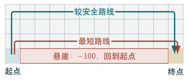
Q-learning 的目标接 ，它估计的是以后每步都选最好动作的价值，因此学到的贪心策略走贴悬崖的最短路线。Sarsa 的目标接实际的 ，其中 是对当前 的 -贪心策略；价值估计包含以后继续探索的风险，所以 Sarsa 偏好的路线可能离悬崖更远。书上把两条路线称为较安全路线与最优路线。需要注意，在 保持 时，“最优”只对不探索的贪心策略成立；对仍在探索的行为，贴边路线并不最好。
两条学得的路线
为了看清楚两种方法实际学到什么，本课实验在这个任务上各训练 500 回合（，），然后冻结 表，画出各自的贪心路线。贪心动作出现并列时，按固定的动作顺序打破。我们把紧挨悬崖上方的十个可行格称为临崖格；起点向右也会落崖，两种方法共享这一风险，下面只比较悬崖正上方的十个位置。
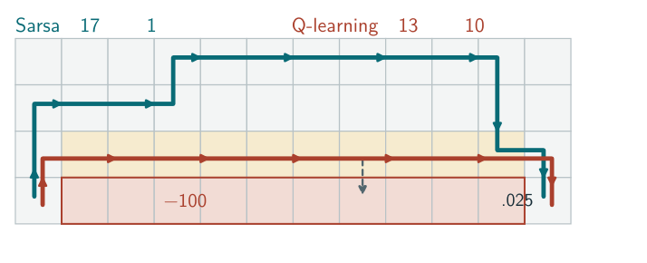
Q-learning 的路线经过全部 10 个临崖格，Sarsa 的只经过 1 个。具体地说，Sarsa 先向上两格、向右三格，再上到最上一行，沿最上一行走到第 11 列，在这一列下行，踏入一个临崖格，再向右、向下到终点。Sarsa 的路线在第 2 到 10 列与悬崖之间隔着临崖格这一行，只在终点前一列踏入一格。这是单次运行的结果；下面用 12 次运行看回报。
临崖格上的风险可以直接算出。设某个临崖格上唯一的贪心动作是向右。训练时 ，探索在四个动作中均匀选择，所以向下的概率是 。单看这一步，实际行为的期望奖励由 变为
跌落还会把智能体送回起点，随后要继续行动，所以整回合的代价比这一步更大，具体多少要看行为会访问哪些格子、各访问多少次。Q-learning 的路线让这一风险出现十次，Sarsa 的路线只出现一次。
训练回报与贪心回报
在 12 次独立运行上，两种比较给出相反的排序。训练期间两种行为都保留 的探索，最后 100 回合的平均每回合奖励是 Sarsa 、Q-learning 。Sarsa 的目标计入了探索的后果，学到离边缘更远的路线，所以训练中跌落少、回报高。
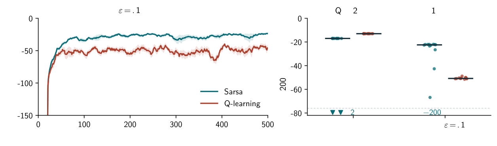
冻结后只走贪心时，排序反过来。Q-learning 的 12 张表都给出 13 步的贴边路线，各得 ；Sarsa 有 10 张表给出 17 步的安全路线，各得 ，中位数为 。另外 2 张 Sarsa 表（第 8、9 号运行）在最上一行的某一格，贪心动作是向上；向上撞墙后原地不动，永远到不了终点，按 200 步截断各记 。12 次的平均因此是
这个平均被两次停住的运行拉低，比较路线应看中位数 与 。
这两张停住的表说明，500 回合、步长 的 Sarsa 并不保证每个状态的贪心动作都已排好。第 8 号运行在第 1 行第 5 列，向上与向右的估计是 与 ；第 9 号运行在第 1 行第 10 列，是 与 。两个动作的估计只差零点几，向上恰好略高。冻结后若保留 的探索，Sarsa 的中位数约 ，Q-learning 约 ，与训练中的排序一致；这时那两次运行正是 Sarsa 最低的两个点（ 与 ），因为探索能把智能体带离撞墙的那一格，但要多走许多步。
冻结后的评价用独立编写的环境模型做 200 步有限递推，模型只用于评价，不向训练提供信息。两点限制需要说明。其一，横轴的回合预算相同，交互步数却不同，这组结果不作样本效率排名。其二，固定步长的有限实验不是渐近收敛的证明；只有同时指明执行的策略和计分时限，这些数值才能互相比较。
上图是悬崖网格，青线与红线分别是 Sarsa 与 Q-learning 当前表的贪心路线，浅黄一行是临崖格；下图是每回合奖励之和的 20 回合滑动平均。两个学习器同时训练（），可按“单步”“一回合”或“连续训练”推进，“计算过程”对所选学习器刚做的一次转移列出三种一步目标。训练满 500 回合后，Q-learning 的贪心路线沿临崖格走 13 步，Sarsa 多数绕到上方走 17 步。“12 次运行平均”给出最后 100 回合的平均奖励，与正文的 、 相近；随机数不同，读数不逐位相同。
Sarsa 与 Q-learning 的区别落在后继动作上。 Sarsa 用实际采到的 ，评价带探索的行为本身；在悬崖上它学得远离边缘的路线，训练回报较高（）。Q-learning 取 ，评价贪心后续；它的路线更短，冻结后贪心执行得 ，但训练中执行的探索行为更常跌落（）。哪一个更好，取决于部署时是否还探索。
不同意见 有人认为悬崖行走夸大了两种方法的差别：差别来自训练始终保留 的探索。Sutton 与 Barto 在例 6.6 的讨论里指出，若 逐步减小，两种方法都会渐近收敛到最优策略，也就是贴着悬崖的最短路线。这一点成立；这个例子要看的是探索不能停时，两种目标学到的东西有什么不同。另有人认为这个比较对 Q-learning 不公平，因为训练结束后关掉探索，Q-learning 的贴边路线回报更高。这一点也成立：左图比的是训练期间带探索的行为，右图比的是冻结后的贪心策略。
Q-learning 的价值估计与贪心策略
控制与预测的一个区别是，动作价值会被用来选择以后的动作，所以价值估计与采样分布相互影响。一次更新可以改变某个状态的动作排序，下一回合就换一条路线，于是收到的数据也随之改变。这一小节先用一个单步算例说明这种反馈，再看泥地上较长训练的结果，最后比较冻结策略在两种执行方式下的价值。
选读：更新对行为的反馈。 设当前 快照为 、，S7 的另两个动作值更低。这是为本例设定的表，其中 ；6.1 节在 S4 用的那张表（最大值 ）是另一时刻的估计。智能体从 S7 向上，实际到达 S4，奖励为 0。取 ，Q-learning 的目标是 ；用 更新，
只有 被更新， 保留。下一回合重置到 S7 时，贪心动作由向上变为向左，确定地到达 S6。若改用 6.1 节那张表，目标是 ，更新后 ，仍高于 ，贪心动作不变，看不到这里要讲的切换。
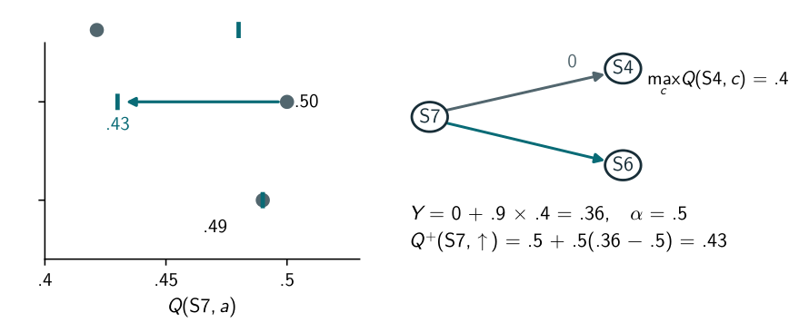
这个机制对同策略的 Sarsa 同样成立：只要行为由当前 决定，更新就会改变以后的数据。-贪心行为仍保留随机探索，所以单步算例只说明动作排序怎样改变，完整的学习过程还需要持续交互。
选读：泥地上的 Q-learning。 下面在泥地上做较长的训练：每次从 S7 重置，按 探索，所有初值设为 ，步长 ，，执行 20000 次真实转移，独立重复 100 次。这个任务的奖励在 内，初值 1 是乐观初值（Sutton 与 Barto §2.6）：尚未充分试过的动作保留较高估计，因而有更多机会被尝试。乐观初值改的是学习器的初值，环境仍是同一个泥地。
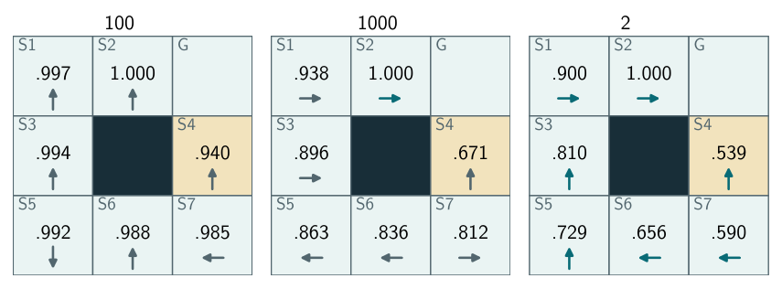
乐观初值下，100 次运行在两万步后都在 S7 选择绕行。100 步时所有表项都还接近初值 1，箭头多是并列时按上、右、下、左的固定顺序取出的，没有意义。1000 步时 S2 已全部向右，其余格还在变。到两万步，S1、S2、S3、S5、S6、S7 在 100 次运行中贪心动作完全一致，正好是绕行策略：S7 向左，经 S6、S5、S3、S1、S2 到终点；这六格的平均估计与 相同到三位小数，S7 在 100 次中都取 。S4 有 92 次选向上。
S4 的估计波动最大。两万步时 S4 的估计为 （均值 标准误，标准差 ），真值为 。单次运行可以从 到 ，例如其中一次运行得 ，在一个标准差之内，所以不能凭一次运行下结论。均值比真值高 ，以标准误衡量不足以断定存在偏差；取最大值的目标可能带来的正偏差留到下一节（6.5 节）讨论。
选读：保留探索的代价。 现在固定学得的绕行箭头，比较两种执行方式：总按箭头走的贪心策略，其价值就是 ；以及仍以 探索的行为，每格以 走箭头、其余三个动作各 ，记其价值为 。两者都用七状态线性方程精确求得，都是策略真值；训练中的 是另一个估计量。策略冻结后改变探索概率就改变了轨迹分布，所以两者的差异不是估计误差。
| 状态 | S1 | S2 | S3 | S4 | S5 | S6 | S7 |
|---|---|---|---|---|---|---|---|
| 箭头 | → | → | ↑ | ↑ | ↑ | ← | ← |
| .858 | .977 | .754 | .482 | .663 | .583 | .514 | |
| .042 | .024 | .056 | .044 | .066 | .073 | .077 |
表中前三行与课件的价值网格相同；最后一行由课件给出的逐格差值整理。S7 的贪心价值为 ，即 ；保留探索后降为 。沿绕行路线 S2、S1、S3、S5、S6、S7，差值依次是 、、、、、，离终点越远越大。原因是每多走一步，就多一次以 概率偏离箭头的机会，偏离后要多走几步，折扣随之累积。S4 在泥地，一步就能到终点，差值 仍比 S2 大：泥地里每次尝试有 的概率原地不动，要多停留几步，每一步都可能偏离箭头。
这张表回到本节的主题。Sarsa 在固定 下估计的是 一类的量，Q-learning 估计的是贪心策略的价值。报告训练奖励、带探索行为的价值和冻结贪心策略的价值时，需要分别说明执行的是哪一个规则。
6.5 最大化偏差与 Double Q-learning课件
最大化偏差课件
6.3 节求 Q-learning 目标的条件均值时，把表 看作固定的。实际的表是从有限样本估出来的，每个表项都带有噪声，目标里的 会倾向于挑中碰巧偏高的那一个。下面用一个最小的例子看这个偏高有多大。某个后继状态有两个动作 ，真值都为 ；两个估计各自独立，等概率取 或 。四种组合各占 ：
| 组合 1 | 组合 2 | 组合 3 | 组合 4 | |
|---|---|---|---|---|
最大值三次为 、一次为 ，对四种组合取平均得
每个估计单独看都是无偏的，取最大以后均值偏高 。这和 6.3 节的结论可以同时成立：那里给定同一张表，对环境后果取平均，得到的是 ；这里平均的是不同的表上的最大值。
偏高的来源是选动作与给所选动作估值用了同一组噪声。被 选中的往往正是噪声为正的那个，读出的值跟着偏高。把选择和估值交给两组独立的估计，就能把这一层拆开。设另有一张独立、无偏的表，用第一张表选动作，再从第二张表读所选动作的值；第二张表的噪声与选择无关，给定选中的动作，读出值的均值就是该动作的真值。两种做法对照如下，数值取上面的例子。
| 选与估 | 选动作 | 给所选动作估值 | 读出值的均值 |
|---|---|---|---|
| 同一张表（Q-learning） | ，高于真值 | ||
| 两张独立的表（Double Q-learning） | ，等于所选动作的真值 |
这个结论针对上面构造的独立噪声。实际运行 Double Q-learning 时，两张表读到相关的经验，又互相构造对方的目标，所以二者有统计关系。因此不能说所有偏差都被消除，只能说选择造成的那部分偏高被去掉了（据 Sutton 与 Barto §6.7；四种噪声组合为本课精确枚举）。章末“四个一步目标”给出两动作真值不同时的算例，那里双表的估计偏低。
不同意见 有人认为最大化偏差在实践中不要紧：若所有动作都同样偏高，选哪个动作不受影响。可偏高往往不均匀。van Hasselt（2010）指出，样本越少，估计的方差越大；由此推测，被访问少的动作更容易被高估，于是被反复选中。也有人指出 Double Q-learning 会偏低；两种偏差哪种害处大，要看任务。
Double Q-learning 算法
Double Q-learning 保存两张动作价值表 ，用一张表选动作，另一张表估值。行为对两表之和做 -贪心选择，所以两张表共同决定实际执行的动作。每次真实转移后，等概率决定这一次更新哪张表：被更新的记为 ，另一张记为 。表 在后继状态选出贪心动作，表 给这个动作估值，然后只修改表 的当前条目。
算法 6.4 表格 Double Q-learning
给定 ，初始化两张动作价值表 。
- 每回合：取得非终止起点 。
- 重复：按 的 -贪心策略选 ，执行并观察 。（两表共同决定行为）
- 等概率取 或 。（本次分工）
- 若 终止，置 ；否则执行第 5、6 步。
- ，并列任选。（表 选动作）
- 。（表 估值）
- 。（只更新表 ）
- 若 终止则结束本回合，否则令 并回到第 2 步。
在一次普通的最大化更新里，某个动作可能因估值偏高而被选中，同一个偏高的估值又进入目标。算法 6.4 的第 5、6 步把这两件事分开：表 挑动作，表 评价刚才挑中的同一个动作，第二张表不再取最大。第 3 步随机交换两表的角色，两边都有学习的机会，每张表大约得到一半的更新。终止时目标直接取奖励，不读取下一动作。行为策略要持续覆盖各状态动作对，这一点与 Q-learning 相同；交互结束后按两表之和选贪心动作。与 Q-learning 相比，这个算法多存一张表，每步的计算量不变（Sutton 与 Barto §6.7）。
多次运行的比较
为检验上面的论点，换用 Sutton 与 Barto 例 6.7 的设置。状态 A 有两个动作：向右直接结束，回报 ；向左到状态 B，奖励 。B 有 10 个动作，每个都以均值 、方差 的正态奖励结束。所以向左的期望回报是 ，最优策略在 A 总向右； 的贪心策略仍有 的概率随机选到左。参数取 ，，， 初值为 ；本课按这个设置模拟 2000 次运行取平均，每点的标准误不超过 。
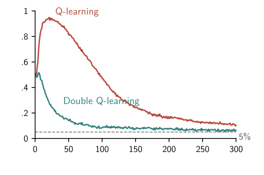
| 在 A 选左的比例 | Q-learning | Double Q-learning |
|---|---|---|
| 前 10 回合均值 | ||
| 峰值 | （第 21 回合） | （第 5 回合） |
| 末 50 回合均值 |
Q-learning 的目标在 B 处取 10 个估计的最大值。起初 B 的未试动作估计都是 ，试过的动作中有一部分碰巧拿到正奖励，10 个估计的最大值几乎总是正的，于是 被抬到 以上，A 处的贪心动作成了向左。2000 次运行平均下来，前 10 回合选左的比例是 ，第 21 回合达到 ，几乎所有运行都在贪心地选左。此后 B 的估计逐渐被拉回 附近，选左的比例才慢慢下降，最后 50 回合仍有 ，是最优比例的两倍多。Double Q-learning 在 B 用一张表选动作、另一张表估值，峰值只有 ，出现在第 5 回合，最后 50 回合为 ，接近 。原书图 6.5 是 10000 次运行的平均，本课重做的 2000 次运行给出同样的次序。
第一幅图是 A 处选左的比例，第二幅图是 A 向左时目标里自举项的平均，虚线是真值 ；页面分块跑 2000 次运行、每次 300 回合，红线是 Q-learning，青线是 Double Q-learning。跑完后两种方法的前 10 回合均值、峰值与末 50 回合均值与上表相差不超过 ；Double 的曲线前几回合几乎持平，峰值落在哪一回合随运行变动。第二幅图前 10 回合 Q-learning 的自举项平均约 ，比真值高 ，偏高来自在 B 取 10 个估计的最大值。把 B 的动作数调为 1，max 只读一个估计，Q-learning 的峰值降到约 ，与 Double 相同。计算过程面板先算正文两个估计的四种组合，再列出所查看回合的两种自举项。
泥地上的情形不同。本课在泥地另做 100 次独立运行（，，，每次 20000 步）：S4 的 均值，Q-learning 为 （标准差 ），Double Q-learning 为 （标准差 ），真值 ；两种方法 100 次都在 S7 学到向左绕行。Q-learning 的均值比真值高 ，而均值的标准误约为 ，看不出偏差。单独一次运行里 S4 的估计可以偏离真值好几个百分点，那来自固定步长下的波动，不是最大化偏差。泥地每个状态只有一条明显更好的路，噪声很少改变谁是最大，所以显不出最大化偏差；要显出它，需要例 6.7 那样动作多、均值相近、噪声大的状态。
已经解决的。 估计无偏时，，偏高来自选择与估值共用同一组噪声（Jensen 不等式）。两组估计独立且无偏时，Double Q 的估计不超过真值的最大值，可能偏低（本节与 van Hasselt，2010）。
已有工作。 Thrun 与 Schwartz (1993) 指出函数逼近误差经过 后系统地偏高，并估计了偏高量随动作数增长。van Hasselt (2010) 用两张表把选择与估值分开。Lan、Pan、Fyshe 与 White (2020) 的 Maxmin Q-learning 取多张表的最小值，用表的数目调节偏差的方向与大小。第 10 章的 Double DQN 把这一想法用到深度网络上。
没有解决好的。 表格情形下两张表读到不同的经验，噪声近似独立。共享参数时，两组估计来自相关的数据与相关的网络，独立性不再成立，Double Q 去掉多少偏差没有一般的结论。偏差的大小还取决于各动作被访问的次数：访问少的动作噪声大，更容易被 选中。偏高与偏低哪一个对控制更有害，取决于它们怎样改变后续的探索，目前只有逐任务的实验证据。
怎样检验。 在例 6.7 的 A–B 任务上操控 B 处的动作数、奖励噪声的方差与各动作的访问次数。比较 Q-learning、Double Q-learning 与 Maxmin Q-learning，测量单位是 A 处选左的比例与自举项相对真值的偏差。重复单位是独立运行。再把表换成线性函数逼近，测量两组估计误差的相关系数与偏差的关系。
6.6 蒙特卡洛控制与策略改进课件
6.2 到 6.5 节的方法，Sarsa、Expected Sarsa、Q-learning 和 Double Q-learning，目标都是一步：。它们借用下一格的表项，所以一格的目标准不准，取决于下一格估得准不准。本节换一种目标：用整回合的回报估计动作价值，并在回合之间改进策略。这样做的好处是目标只依赖实际发生的奖励，代价是要等回合结束，并且需要另想办法保证每个状态动作对都被试到。
整回合回报与探索
一步目标借用其他表项，整回合回报只依赖实际发生的奖励。看泥地的第一回合： 初值全为 0，设智能体从 S7 沿左路 S7、S6、S5、S3、S1、S2 走到终点，只有最后一步得到奖励 1。两种目标在 S7 处的值如下表。
| 方法 | S7 处的目标 | 第一回合的值 |
|---|---|---|
| Sarsa（一步） | （ 仍为初值 0） | |
| 蒙特卡洛（整回合） |
Sarsa 要等后面几格先被更新，S7 才收到非零目标；蒙特卡洛的回报在第一回合就落到 S7，不依赖任何别的表项。这是第 5 章 5.3 节讲过的自举偏差在控制问题中的表现。
整回合的代价有两样。第一，要等回合结束才算得出回报，回合很长或不终止时就不能用；第 7 章 7.1 节用多步回报在两者之间折中。第二，蒙特卡洛只更新实际走过的状态动作对，要保证每个 都被试到，最简单的办法是探索性起点：每回合由实验者指定起始的状态和动作。在模拟器里可以这样做；部署中的智能体不能把自己放回任意一格，也不能指定第一步做什么。所以下面的算法改用 6.2 节定义的 -软策略，让探索发生在回合之内。
首次访问的 ε-软策略蒙特卡洛控制
蒙特卡洛控制以回报均值估计 ，在回合之间改进策略。这仍是第 4 章的评价—改进交替（GPI）：用当前策略产生一个回合，用回合中的回报更新 ，再根据新的 调整下一回合的动作概率。考虑回合任务，各回合以概率 1 终止，共跑 个回合。初始化动作价值 和计数 ；初始策略 对 作 -贪心选择，它是 中的一种。下面的算法取自 Sutton 与 Barto §§5.3–5.4。
算法 6.5 首次访问的 -软策略蒙特卡洛控制
- 对 ，按 生成至终止的完整回合 。
- 置 ，倒序计算 。
- 对每个访问过的 ，取本回合首次访问时刻 ：，。
- 令 对更新后的 作 -贪心选择。
算法里有几处顺序需要注意。策略在一回合内固定；回报倒序计算，而首次访问依据正向轨迹判断；计数先加一，再更新均值，所以第 3 行的 正是该对所有首次访问回报的样本均值。回合结束后才统一改策略，不会改变已经记录的回报。
用前面那条回合走一遍第 2 行：S7 向左后沿 绕行，六步到终点，只有最后一步得到奖励 1。从末尾往回算，S2 处的回报是 1，每往前一步乘 ：S1 处 ，S3 处 ，S5 处 ，S6 处 ，S7 处 。这条回合中每个状态动作对只出现一次，所以首次访问的回报就是这些数；若某对在回合里出现多次，第 3 行只取第一次出现时的 。
评价和改进交替进行，价值估计来自实际回报。策略每回合都可能改变，旧回报的平均追踪的是一个变化中的目标，实际常用常数或递减步长组织更新。这种交错进行的控制也不是每轮都用无限数据准确评价。下面先看准确评价时， 约束内的改进关系。
ε-软策略的改进
在 -软策略类里，对 取 -贪心不会降低价值。固定 ，设每个状态有 个动作，旧策略 满足 。新策略定义为 ，其中 ；也就是先给每个动作分出不可减少的探索概率 ，再把剩余的 全部放到准确 最大的动作上。下面的不等式比较按旧 计算的新旧加权和。
第②步中括号里的系数 非负、和为 ，所以这个加权和不超过同样总权重乘最大值；第③步用 。不等式在每个状态都成立，第 4 章 4.3 节的策略改进定理便给出 。 时只有均匀策略一种，改进退化为相等。
S7 处的一步改进。 旧策略取 的 -软版本，：S7 向上 ，其余三个动作各 。按这个策略精确求出的动作价值是：向上 ；向右和向下都撞墙留在 S7，各 ；向左 。状态价值 。 最大的是向左，新策略把 从向上移到向左，其余动作各保留 ：
| 动作 | ↑ | → | ↓ | ← |
|---|---|---|---|---|
| .432 | .389 | .389 | .521 | |
| .85 | .05 | .05 | .05 | |
| .05 | .05 | .05 | .85 |
按旧的 计算新策略的加权和，得 ，大于 ，这是不等式②在 S7 的一个实例。不等式说的是按旧的 计算；新策略真正的价值要重新评价，策略改进定理保证它不低于旧值。
证明使用准确的 ，所以它说明的是改进的方向；按估计 选动作时，还要判断估计误差是否改变了动作排序，章末补充阅读二讨论这件事。若所有状态都取等号， 已是全部 -软策略中最优的一条。Sutton 与 Barto §5.4 的证明办法是把探索下界移入环境。构造一个新环境，它在每个状态以概率 替智能体均匀随机选动作。于是新环境中的最优策略恰好对应原环境中最优的 -软策略；等号条件就是新环境的 Bellman 最优方程。这个最优是相对 -软策略类而言的，一般低于不探索的 。若希望渐近得到不探索的最优策略，需要同时安排逐渐贪心与无限访问等条件（6.3 节的 GLIE）。
泥地上的 ε-软控制
把算法 6.5 在泥地上实际跑一遍。设置为 ，四个动作，每回合都从 S7 出发， 初值全为 0；多个动作并列最大时取 的动作，所以一开始的策略就是 的 -软版本；更新用样本均值。下图为一次运行。
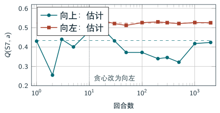
前几回合 S7 都向上走，向左从未被试到， 还是初值 0。向左只靠 探索才会被选中，每回合概率 。这次运行到第 10 回合已有 3 次向左，估计约 ，超过向上的 ，贪心动作改为向左。此后向左成为主要动作，访问次数快速增加；向上只剩探索的 ，2000 回合里只被选了 133 次，所以它的估计还在 到 之间摆动。
2000 回合后 （访问 133 次），（访问 1889 次），共 15493 次转移。最终的贪心策略只改了 S7：S7 向左，其余各格仍按 （S1、S2 向右，S3、S4、S5 向上，S6 向左）。图中虚线是这条最终策略的 -软版本的准确动作价值：向上 ，向左 。向左的估计已经很接近；向上的估计因为样本少，误差仍然明显。两条估计都是含探索步的回报均值，所以它们逼近的是 -软策略的价值，比不探索的最优价值低：向左绕行在确定策略下回报是 ，这里只有 。
单次运行的结果可能是巧合，所以再独立运行 100 次。第 20 回合时 79% 的运行已在 S7 选左，第 200 回合 94%，第 2000 回合全部选左。估计差距要多大才能相信排序是对的，章末补充阅读二用固定后续策略的数据给出一个有限样本的界。
探索性起点
另一种保证覆盖的办法是本节开头提到的探索性起点：每个回合从随机选取的状态动作对开始，各对都有正概率，此后按当前贪心策略行动（Sutton 与 Barto §5.3 的 MC ES）。它不需要在后续动作中保留探索，却要求能把环境重置到任意状态动作对，真实系统通常做不到。MC ES 的不动点一定是最优策略与最优价值，因为策略稳定时价值与策略彼此一致，满足 Bellman 最优方程；但它在一般有限 MDP 上是否收敛，原书称仍是未解决的理论问题，目前只有部分情形的证明。
不同意见 有人认为在软策略里改进是绕远路：最终要的是贪心策略，不如用离策略方法直接学它（6.7 节）。软策略的好处是只有一个策略，数据就是被评价策略自己的，不需要概率比，方差小；代价是学到的价值带着探索。这正是 6.2 节末讨论过的同策略与离策略的取舍。
6.7 离策略评价与重要性采样课件
6.6 节的蒙特卡洛控制只用同策略的数据：被评价的策略就是产生回合的策略。本节换一个问题：数据由行为策略 产生的完整回合构成，要估计另一个目标策略 的价值。一步方法里，后继动作只有一个，Expected Sarsa 可以按 显式求和，Q-learning 直接取最大，那个位置没有抽样，所以不需要比率。整回合回报里， 到 全由 抽出，回报又依赖整串动作，无法逐个改成求和；要评价 ，只能给每条回报乘概率比。
问题与条件
为了全节只用一组数，先把两种策略固定下来。 是第 5 章泥地的旧策略：S1、S2 向右，S3、S4、S5、S7 向上，S6 向左。在 S7，行为策略 向上、向左各 ，目标策略 以 向上、 向左；其余各格两者都按 。这里的 是给定的行为策略，与 6.2 节由当前表导出的 -贪心策略 不是一回事。后面的轨迹比率、首动作权重、两种估计、偏差与均方误差都用这一组策略；只有八步连乘和无穷方差两个例子是另外的任务，届时会标明。
难处可以用一个数说清。由 6.1 节，S7 向上的路线回报均值为 ，向左绕行的回报为 。把行为回合的回报直接平均，期望是
而目标策略的价值是 。行为策略走左路的次数比目标策略多，左路回报又较高，所以直接平均偏高。
换权重的工具先在一步上看（下一小节“比率换掉分布”）：在 S4，动作按 抽出，乘 后，期望从按 的平均变成按 的平均。之后各小节把同一做法用到整条轨迹。整回合回报里的后续动作都由 抽出，无法像一步目标那样按 求和；直接用这些回报评价 ，就要给每条回报乘轨迹比率 。它需要一个条件，称为覆盖：。若 会选的某个动作 从不选，那部分概率质量在数据里没有样本，乘多少比率都补不回来。
选读：比率条件的一般形式。 设随机量 在数据里按分布 出现，被估量是 。直接用样本均值，期望与被估量相差 ；要对一切 都无偏，取 为单点指示函数就得出 。乘上 之后，在 的点上 ，期望恢复成按 的求和；在 的点上数据里永远没有样本，期望少了 。所以对一切 无偏的充要条件是没有这样的点，也就是覆盖。放回强化学习， 是行为策略抽出的动作或动作序列；环境给出的奖励和后继状态在两种策略下分布相同，比值为一，所以概率比只含策略的因子。下一小节的 S4 一步算例就是这种情形：，，，按 平均得 ，按 平均得 ，偏低 ； 四个动作都会选，覆盖成立，乘比率后无偏。
不同意见 有人认为对一切 无偏的要求太严：实际中只关心一个特定的价值表，只要 很小就可以不乘比率，换来更小的方差。偏差可估计时这是合理的折中，Retrace 和 V-trace 截断比率就是这样做的；但 随学习变化，偏差的大小事先不知道，所以本节的条件按对一切 成立的要求来写。
比率换掉分布课件
动作按 抽出，再乘 ，样本的平均就从 下的平均变成 下的平均。这个比率在全章反复出现，这里给出它唯一的正式定义，本节其余各小节与本章小结都用这里的记号。
重要性采样比（简称重要性比） 在覆盖条件下，单个动作的比率是
一段动作的比率是逐步比率之积 。覆盖条件保证在 的地方分母不为零。
先只看一步。回到 6.2 节“分开之后的困难”：已在 S4，表里四个动作的值是上 、右 、下 、左 ，，新设的 以 向上、 向左。想要的量是 。
| 动作 | |||||
|---|---|---|---|---|---|
| 上 | |||||
| 右 | |||||
| 下 | |||||
| 左 |
像 Sarsa 那样直接用采到的下一动作的值，样本按 出现，平均是 ，那是 下的平均。给每个样本乘上比率：向上的乘 ，向左的乘约 ，右和下乘 。按 取期望时分母约掉，
代价是方差。乘过比率的样本取 、 或 ，二阶矩约 ，方差约 ；目标（奖励 ，）的方差是它的 倍，约 。不乘比率时（即 Sarsa 目标）方差约 。这里比率最大只有 ；若 偏爱一个 很少选的动作，比率和方差都会变大。三种一步目标并排比较（奖励 ，）：
| 目标 | 均值 | 方差 |
|---|---|---|
| 采样后乘比率 | ||
| 按 直接求和 | ||
| 取贪心，即取最大 |
其中 ，。
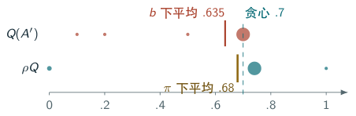
一步时其实不必采样： 与 都在手里，直接按 求和就得到 ，目标 ，方差为零。这就是 Expected Sarsa 在 时也不用比率的原因。 取当前表的贪心策略时，求和变成取最大，得到 ，目标 ，即 6.3 节的 Q-learning。整回合回报的后续动作没法这样求和，只能采样再乘比率，本节下面几个小节处理那种情形。
不同意见 有人主张即使一步也宁可采样加比率，例如动作空间很大或连续、无法对所有动作求和时；第 11 章的策略梯度就是这样处理大动作空间的。也有人指出比率可以截断以控制方差（如 Retrace、V-trace），代价是引入偏差。取舍取决于动作空间能否求和、方差能否承受。
轨迹重要性采样：泥地算例
每条回报保持不变，乘上 后，行为回合的平均从 变为 。先看两条路的轨迹。S7 向上进入泥地 S4，每一步以 停留、以 脱困到终点；失败 次再成功的轨迹，在 下的概率是 ，回报是 。S7 向左绕行，之后五步都是确定的，回报 。两条路都不再回到 S7。
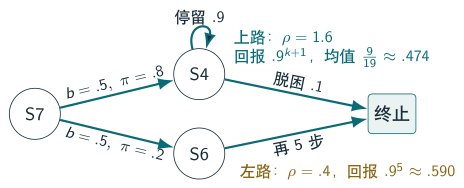
轨迹概率比只看动作概率。泥地里停留与脱困的概率在 和 下相同，分子分母约掉；离开 S7 后两策略都按 ，比率都是 1。所以每条上路轨迹的比率都是 ，左路是 。按行为概率平均加权回报，
上路的级数是 ，所以总和是 ，与按目标策略解线性方程得到的价值相同；直接平均行为回报则是 。上路所有长度的概率之和为 ，乘 后变为 ，左路由 变为 ，正好是 的分配。注意回报要保留几何等待的折扣，不能用平均时长代替。
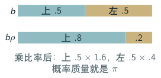
用一种分布的样本、按概率比加权来估计另一种分布下的期望，叫重要性采样（importance sampling）。这项计算没有为某次上路轨迹合成如果当时向左的回报，每次真实回报原样保留，只改变它在平均中的权重。上面列出的 与 只用于核验；学习器只需要行为与目标的概率以及逐回合的实际回报。
轨迹概率比。 一般地，设同一马尔可夫环境、同一起点，固定 与 。对一条观察到的完整路径 ，它在某个策略下的概率由每步的策略概率与环境概率相乘，两种策略面对的是同一个环境模型 ，于是
这就是 6.2 节定义的 取 的情形（Sutton 与 Barto §5.5，式 (5.3)）。把乘积拆开看，每一步有两件事：先由策略选动作，再由环境给出奖励和下一个状态。前一件的概率在两种策略下不同，留下 ；后一件只由环境决定，分子分母约掉。所以算比率不需要环境模型，只需要两种策略在实际动作上的概率。例如在上路，若停留两次才脱困，这段泥地转移的概率 在分子、分母中相同，整条路径的权重仍是 。这个乘积是在当前状态已经固定的条件下写出的；若先给初始分布，行为和目标需要同一起始分布。
首动作的权重。 比率从哪一步开始乘，取决于首动作由谁决定。用行为轨迹的回报 估计目标策略的价值，有两个恒等式（Sutton 与 Barto §5.5，式 (5.4)）：
状态价值问的是站在 按目标策略走下去，首动作也由策略抽取，它的概率比要算进去，下标从 开始。在 S7，首动作由 抽出， 选它的概率不同：向上的回合乘 ，向左的乘 ，平均得 。动作价值问的是先做 、再按目标策略走，首动作是题目给定的，与两个策略都无关，比率从 开始乘。问先向上的价值时，离开 S7 之后两策略相同，后面每步比率都是 1，所以 就是向上那批回合回报的平均 。若指定首动作后回合立刻结束，没有下一动作需要校正，空乘积取 1。与 6.3 节的一步 Q-learning 不同，这里评价的是固定目标策略从起点产生的整个回报，因而起点的动作也要计入概率比。
不同意见 有人认为动作价值的形式更好用：首动作不乘比率，方差小一截，控制时也直接要动作价值。这一点成立，本节后面的逐决策重要性采样也沿着这个方向，把每个奖励只乘到它之前的那些比率。代价是要对每个动作分别收集回合，首动作不能只靠行为策略随机给出。
加权回报的期望。 覆盖成立时，按 加权的行为回报均值等于 。设 、 固定，起点同为 ，环境相同，回合以概率 1 终止，回报可积。对 的完整轨迹求和：
第①步只用期望的定义，求和只取行为下概率为正的轨迹；第②步在这些轨迹上分母不为零，可以约去；第③步需要覆盖：目标策略下概率为正的轨迹在行为下也必须为正，否则这些轨迹从和中缺失。三步只改变每条轨迹的权重，回报本身不变。这个等式是下面普通重要性采样无偏的依据。
易错 覆盖不成立时第③步失效： 从不产生的目标轨迹从和中消失， 一般不等于 ，增加样本也不能修正。
覆盖与方差课件
覆盖保证期望能够重写，并不保证有限数据容易估准。保持目标策略 不变（S7 向上 、向左 ），只改行为： 在 S7 以 向左、 向上。左路回报确定，是 ，权重 ；上路回报随机，二阶矩 ，权重 。一回合的普通估计 均值为 ，二阶矩是 ，减去均值平方就是方差
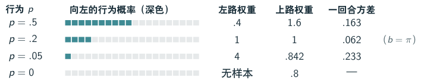
代入几个 ： 时方差 ； 时 ，比率处处为 1，方差 ，就是同策略蒙特卡洛的方差； 时左路权重是 4，方差升到 ； 时权重 20，方差 。 降到 以下后，第一项 主导，方差约按 增长：匹配目标的左路轨迹越来越少，每条都要代表更多行为回合。方差最小的 约为 ，不一定恰好等于 的概率；行为策略可以为降低方差而设计，这是重要性采样里的一个研究方向。若取得 个独立回合，平均后的方差再除以 。
时覆盖不成立。数据里只有上路，乘上路比率 之后期望是 ，少了左路的 。可以设想两个环境：在上路完全一致，在从未走过的左路给出不同回报。两者产生相同的所有记录，却给目标策略不同的价值；所以单靠这些记录定不出 。能继续交互时可以让行为去走左路；固定数据下，需要额外的结构假设（比如认定绕行每步都不会打滑），而这条假设对不对，现有记录给不出证据；或者把目标策略限制在有数据支持的动作上。
这里有两个难点： 变小时每条左路记录要代表更多回合，方差约按 增长； 时估计收敛到另一个数。左右两图分别是普通估计 与加权估计 ，各画 20 条独立序列、每条 200 回合，青线是 。拖动 比较序列散开的程度： 时一回合方差 ， 时 。 时普通估计停在 ，加权估计停在 ，红线标出这两个极限。计算过程面板代入上面的方差式，并对全部可能记录求和，列出 、 的偏差与均方误差。
不同意见 有人认为覆盖条件在实际问题里很少满足，与其要求覆盖，不如对没有数据的动作给出保守的低估，让学到的策略自然避开它们。这是离线强化学习的一条主要思路，第 12 章讨论。它的代价是可能永远错过数据里没出现的好动作，比如泥地的左路。
选读：八步连乘的权重。 路径变长会进一步放大权重。换一个任务（不是泥地）：八个决策点排成一行，；每处可选 或 ，选 立即终止、回报 0，连续 8 次选 到达终点、回报 1。目标策略每次选 ，所以 ；行为策略每处 、 各 。目标路径在行为下的概率是 ，权重 ；其余回合在某处选了 ，目标策略在那里的概率为 0，权重为 0。于是
乘权后的回报大多为 0、偶尔为 256，均值为 1，但方差为 255。动作支持让期望有定义，概率极小仍会使有限样本估计困难（Sutton 与 Barto §§5.5–5.6）。
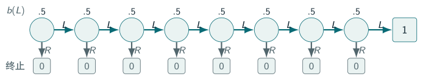
普通与加权重要性采样的偏差和方差
从 按 独立采 个回合，第 个回合的轨迹比率为 ，回报为 。用这组 有两种估计（Sutton 与 Barto §5.5，式 (5.5)–(5.6)）：
两者分子相同，只差分母：普通估计除以回合数，可以超出回报的范围；加权估计除以总权重，总落在观察到的回报之间。加权估计记作 ，取“加权平均”之意，避免与状态价值 撞名。总权重为零时，加权估计暂无取值。
三条回合。 沿用本节的 与 ，三条行为回合各自独立地从 S7 开始：
| 回合记录 | 向左绕行 | 向上，首次即脱困 | 向上，停留两次后脱困 |
|---|---|---|---|
| 完整回报 | |||
| 概率比 |
加权和是 。普通估计除以回合数 3，得 ；加权估计除以总权重 3.6，得 。目标价值是 。
把三条回报、两个估计和真值放在一条数轴上看，有两件事。第一，普通估计 比三条回报里最大的 还大：三条记录的平均权重是 ，大于 1，普通估计就被整体放大；加权估计是三条回报的加权平均，权重非负、和为一，所以一定落在 到 之间。第二，两个估计都远高于 ，原因是这三条记录本身偏乐观：泥地回报的均值只有 ，而这里两条泥地回合都很快脱困。三条记录太少，单次结果说明不了哪个估计更好；下面按全部可能记录比较。
不同意见 实践中多数人用加权估计：它有偏，但偏差随回合数增加而趋于零，方差通常小得多。也有人坚持普通估计：它无偏，推广到函数逼近时形式更简单（Sutton 与 Barto §5.5）。两种看法都有道理，下面把两者放在同一组数据上比较。
递推实现。 两种估计都可以边读回合边更新，不必保存全部回合。每个回合倒序扫描一遍，同时累计回报和比率乘积；扫描结束后再更新两种估计。
算法 6.6 普通与加权重要性采样的递推（固定起点 ，用 的完整回合估计 ，假设覆盖成立）
- 初始化普通估计 、总权重 ；加权估计 暂无取值。
- 对 ：从同一 按 独立生成回合，至终止时刻 。令 。
- 对 ：，。可选： 时提前结束。
- 回合扫描结束后，普通平均：。每个回合都占一个样本。
- 回合扫描结束后，加权平均：若 ，令 ；首个正权重回合令 ，此后令 。
- 返回 ；若 ，同时返回 。
第 3 行从回合末尾往回走：每退一步，一个标量把奖励折扣加进回报，另一个标量乘上这一步的动作概率比；扫到时刻 0 时， 是整条回报 ， 是整条轨迹的比率 。行为策略实际抽了首动作，所以比率从第一个动作开始乘。第 4、5 行要用这两个数，所以写明在扫描结束后执行。若中途 已经是 0，后面再乘也还是 0，可以提前结束扫描，但普通估计仍要把这个回合记为一个零值样本。加权估计把旧平均和新回报按累计权重合并，直到第一次遇上正权重回合，这个比值才有定义；零权重回合不改变 ，也不会触发 。
用上面的三条记录走一遍：
| 读入 | |||||
|---|---|---|---|---|---|
| 第 1 条（绕行） | .4 | .59049 | .236196 | .4 | .59049 |
| 第 2 条 | 1.6 | .9 | .838098 | 2 | |
| 第 3 条 | 1.6 | .729 | .947532 | 3.6 | .789610 |
最后一行与前面直接计算的 和 相同。
偏差与均方误差。 仍用 S7 的分布：，，， 个独立回合，下面的数都是对全部可能记录精确求和得到的，不是模拟。均方误差等于偏差平方加方差，衡量估计离真值平均有多远。
| 普通 | 加权 | 普通 | 加权 | |
|---|---|---|---|---|
| 均值 | .497 | .532 | .497 | .515 |
| 偏差 | 0 | .035 | 0 | .018 |
| 方差 | .163 | .041 | .082 | .035 |
| 均方误差 | .163 | .042 | .082 | .035 |
逐项算出这些数。 时，普通估计 无偏；它的二阶矩用到上路回报平方的条件均值 ，
减去 得方差 。两条路的权重都为正，加权估计 就是行为回报本身，均值为 ，偏差 ，方差 ，均方误差 。 时，普通估计的方差减半为 。两次都走同一条路的情形各占四分之一，权重相同， 是两次回报的平均；一上一左的情形占一半，此时 ，均值恰为 。合起来 ，偏差减半为 ，方差 ，均方误差 。
把表的最后一行画成柱，每根柱的总高是均方误差，其中偏差平方只有 和 ，几乎看不见；均方误差的差别几乎全部来自方差。加权估计有偏，但在泥地上的均方误差只有普通估计的四分之一到一半。
易错 无偏不等于更准。本例 时，加权估计虽然有偏，均方误差（、）都低于普通估计（、）。
不同意见 有人主张用普通估计，因为它无偏，多次运行平均即可，加权估计的偏差却不会被平均掉。可方差无穷时（见下例），多跑也收敛得很慢。也有人偏好截断比率的方法，如 Retrace（Munos 等，2016），在偏差与方差之间取中。泥地上的结论只说明这个例子里加权估计的均方误差更小。
无穷方差。 回合长度无界时，普通估计的方差可以为无穷。换一个任务（不是泥地），即 Sutton 与 Barto 例 5.5：单个非终止状态，。动作向左以 回到原状态、以 终止并得奖励 1；动作向右直接终止，奖励 0。目标 总选左，迟早以左终止并得到 1，所以 ；行为 左右各 。回到原状态 次后以左终止的轨迹，行为概率为 ，比率为 ，回报为 1；其余轨迹含右，比率为 0。于是
一阶矩的级数公比是 ，二阶矩的公比是 ：每多返回一次，概率乘 ，平方权重乘 4，级数发散。普通估计的期望仍为 1，样本均值以概率 1 收敛到 1。但一个返回 次的回合贡献 ；这类回合一出现，就把样本均值拉离 1。加权估计则在第一个以左终止的回合后就等于 1，因为所有正权重回合的回报都是 1，有定义之后方差为 0。Sutton 与 Barto §5.5 指出，回报有界时，即使比率方差无穷，加权估计的方差也趋于零，这是实践中多用加权估计的原因之一。
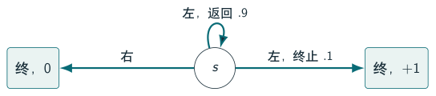
选读：两种估计的形式对比
两种估计可以写在同一组记号下比较。从 按 独立采 回合，，；设覆盖成立、各矩有限，加权估计的两个式子是大 下的一阶展开。
| 普通 | 加权 （） | |
|---|---|---|
| 取值 | 可超出回报的范围 | 在 内 |
| 时 | 方差 | ，方差 ；总权重为零时未定义 |
| 偏差 | （精确） | （大 ） |
| 方差 | （精确） | （大 ） |
表中普通估计的两行是精确式，加权估计的两行是大 下的展开。加权估计要求总权重 ；总权重为零时比值没有定义，Sutton 与 Barto 约定此时估计取 0。一阶偏差项 可以为零，例如 为常数，或 与 独立时；这时偏差是更高阶的小量。所以只能说加权估计的偏差一般为 阶。
普通估计的期望是 ，无偏；方差是单个 的方差除以 ，有限的条件是 ，无穷方差的例子正是这个二阶矩发散。加权估计是两个样本均值之比 ，其中 的均值为 ， 的均值为 。在 附近展开 ，一阶项给出 ，其方差即表中的 ；二阶项 取期望得 ，即表中的偏差。两式都忽略了 阶的项。
两行方差对照，加权估计里 换成了 ：分母与分子一起随 波动，比值里 的整体尺度相互抵消，剩下的只是高权重回合的回报偏离真值多少。最极端的情形是回报为常数 ：普通估计仍随 波动，加权估计恒等于 。加权估计是观察回报的凸组合，不会超出回报的范围，这也是回报有界时它的方差总趋于零的原因。
S7 的数：普通估计单回合方差 ；，所以加权估计的一阶偏差是 ；。与精确值对照如下。
| 普通方差 | 加权偏差：精确 / 一阶 | 加权方差：精确 / 一阶 | |
|---|---|---|---|
| 10 | .0163 | .00251 / .00224 | .00953 / .00968 |
| 20 | — | .00119 / .00112 | .00481 / .00484 |
| 100 | — | .00023 / .00022 | .00097 / .00097 |
和 时一阶式偏离较大（ 精确偏差 ，一阶 ），所以前面小样本的数用精确计算。两种估计都相合：覆盖成立且 时，由大数定律，，分子分母分别收敛，。
不同意见 有人指出加权估计的优势不是无条件的：一阶方差 与 谁大，取决于 与 是否相关。可以构造出加权更差的例子：单步、、、两个动作的回报为 0 与 1，； 时普通估计方差 ，加权估计均方误差约 （本课精确计算）。比率大的动作回报为零时，普通估计几乎不动，加权估计却随两类回合的比例摆动；小样本时偏差也可能主导。另有人认为在函数逼近下加权的形式难以推广，普通估计配上截断或控制变量更方便（Sutton 与 Barto §5.5 及第 11 章）。
逐决策重要性采样课件
整轨迹的普通重要性采样用全部动作概率比的乘积加权每一份奖励。可是第一份奖励发生时，只有第一个动作已经取样；后面那些动作与这份奖励无关，它们的比率只增加方差。逐决策重要性采样让每份奖励只乘它之前的动作比率，期望不变。记 ， 为回合终止的时刻，逐决策估计量是
括号里的乘积只到产生 的那个动作为止（Sutton 与 Barto §5.9，式 (5.11)–(5.15)）。
关键一步是未来比率的条件均值为 1。覆盖成立时，对任一状态，
所以在 已发生的历史条件下，它之后的各个 （）的乘积期望为 1，从整轨迹权重里删去这些因子不改变该项的期望。对有限和逐项这样处理，就得到上面的估计量。若首动作也已给定（估计 ），第一份奖励无需比率，后续乘积从 开始。有限回合提前终止时可在终点后补零奖励，吸收状态的比率取 1。
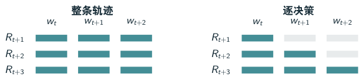
单项条件平均可以减少该项方差，但各项相加后的总方差还取决于它们之间的协方差，不能只凭因子减少就宣称任何任务都更好。第 7 章 7.5 节的多步动作价值校正沿用这个逐决策的写法。
不同意见 有人指出逐决策加权并不总能降低方差：单项的方差变小了，各项之间的协方差却可能变大，总方差未必下降。也有人认为该更进一步，把每一步的比率截断在 1 以内，如 Retrace（Munos 等，2016），用一点偏差换方差的大幅下降。第 7 章的多步离策略校正沿着后一条路走。
已经解决的。 覆盖成立时，普通重要性采样对 无偏；回报有界时，加权估计相合，方差随 趋于零。逐决策加权删去奖励之后的比率因子，期望不变（本节）。
已有工作。 Precup、Sutton 与 Singh (2000) 给出逐决策重要性采样，并把它与资格迹结合。Mahmood、van Hasselt 与 Sutton (2014) 把加权重要性采样推广到线性函数逼近。Jiang 与 Li (2016)、Thomas 与 Brunskill (2016) 用一个近似模型作控制变量，构成双重稳健估计：模型准或比率准，两者有一个成立，偏差就小。Liu、Li、Tang 与 Zhou (2018) 不再连乘动作比率，改为估计状态分布之比，适用于无限长的回合。这些方法都假设行为概率 已知或可估，并要求覆盖。
没有解决好的。 轨迹比率是逐步比率之积，方差随回合长度按指数增长；八步各以 匹配时比率的方差已是 。逐决策与双重稳健方法减小常数，不改变这一增长方式。状态分布之比回避了连乘，但它本身要从数据中估计，估计误差怎样进入价值误差，在函数逼近下还缺少可用的保证。 未知、要先估计时，比率误差与价值误差叠加。
怎样检验。 用本节的八步 L/R 任务，操控决策步数（回合长度）与行为匹配目标的概率 。比较普通、加权、逐决策与双重稳健四种估计，测量单位是给定回合数下估计 的 RMSE，以及达到给定误差所需的回合数。重复单位是独立采集的数据集。在泥地 S7 上可以先用精确的偏差与方差核对实现。
离策略蒙特卡洛控制
选读。 把本节的评价方法用于控制，就得到离策略蒙特卡洛控制（Sutton 与 Barto §5.7）：目标策略取为对当前 的确定性贪心策略 ，行为 保持软策略，用加权重要性采样更新 。对贪心目标， 只取 1 或 0。从回合末尾倒序累乘比率时，一旦遇到 ，权重变成零，更早的时刻都不再得到更新。因此只有回合末尾、最后一个非贪心动作之后的那一段对学习有贡献。泥地中若行为在每格以 选贪心动作，一条六步绕行轨迹全部贪心的概率为 ，越靠近起点的状态越少获得更新。这是整回合离策略方法学习慢的一个具体原因；第 7 章的逐决策与截断校正针对这个问题。
不同意见 有人认为重要性采样只在行为概率已知时可用：离线数据里的行为者常是医生或旧系统，概率没有记录，要先估计 ，估计误差又进入比率。这是实际问题中的主要困难之一。本节假设 已知，表格情形下可以做到。
本章小结课件
四格总图
本章从这样的设定出发：转移规律未知，数据由行为策略产生，要评价目标策略并改进策略。没有模型时，只有把首动作放进预测的条件，才能直接比较同一状态下的两个动作，所以本章的估值对象从状态价值换成了动作价值。本章的方法可以按两个问题排开：数据由谁的动作产生，目标看一步还是看完整回合。下表每格写一个本章算过的数，便于回到对应的小节。
| 同策略：数据由被评价的策略产生 | 离策略：数据由行为策略 产生 | |
|---|---|---|
| 一步目标 | Sarsa： 时 S7 向左 （6.2 节）。Expected Sarsa 取 ，条件均值与 Sarsa 相同，下一动作的抽样方差为 （Sarsa 在 S4 为 ） | Q-learning：S7 向左 （6.3 节）。Expected Sarsa 也可评价与 不同的 。Double Q-learning：例 6.7 末 50 回合在 A 选左 ，Q-learning ，最优 （6.5 节） |
| 整回合目标 | 蒙特卡洛控制：在 -软策略类中改进，S7 的状态价值 ，不试探时 （6.6 节） | 重要性采样：S7 的 （6.7 节）；四格中唯一要乘比率的一格 |
一步目标只抽一条转移；下一动作要么按目标策略求和，要么取最大，没有从行为策略里抽出，所以 Expected Sarsa 与 Q-learning 在右上格不需要概率比。离策略 Sarsa 的目标用采到的 ，仍要乘一步比率 （6.7 节“比率换掉分布”）。右下格的整回合回报里，每个后续动作都由 抽出，评价 就要用轨迹概率比把期望从行为策略的价值换成目标策略的价值：
6.7 节“问题与条件”先给出何时要乘比率的判据，再在 S7 上算出 。
需要离策略的动机有三种，都落在右列。第一种是边探索边学贪心策略：同策略的蒙特卡洛控制在 S7 只得到 -软策略的 ，离策略的目标可以直接对准不试探时的 。第二种是重用旧数据，旧策略产生的经验可以反复用来学习当前策略的价值。第三种是从一条经验流同时学许多预测，每个预测各有自己的目标策略。
遗留问题。 两行各在一端付出代价。一步目标每回合只把新信息向前传一步：泥地的绕行路线有六步， 初值为零时，S7 到第 6 个回合才得到非零目标。整回合目标一次传到起点，但离策略时 沿路径逐步连乘，路径越长方差越大。第 7 章保持数据与方程不变，在两行之间选择目标的长度：用 个实得奖励再自举，或按 混合各种深度（第 7 章 7.1 节、7.2 节）。章末两组补充阅读分别讲各目标的抽样分布与状态分布，以及有限样本下策略改进的界。表格表示之外的问题，留给第 9 章（共享参数）和第 12 章（固定数据下的覆盖）。
不同意见 有人认为这张图只适合表格情形。在函数逼近下，即使右上格不乘比率，更新落在哪些状态上仍由行为策略决定；第 9 章说明，这可能让离策略的半梯度方法发散。这个意见是对的；本章的图只回答动作这一层的问题，状态分布的问题见补充阅读一，系统的讨论在第 9 章。
四个一步目标课件
6.2 节到 6.5 节的四个一步方法共用一条更新式，只差目标里后继动作的那一项 ：
终止时 。环境后果 在四者中相同，都是采到的一条转移。下表右列设后继状态为 S4、，S4 处 ，； 表示表 的贪心策略。
| 方法 | 后继项 | 给定 与表时 | S4 的数 |
|---|---|---|---|
| Sarsa | ， | 均值 ，有方差 | 目标 ，均值 ，方差 |
| Expected Sarsa | 确定 | 时 ，方差 | |
| Q-learning | 确定 | ||
| Double Q | 确定；选与估用两张表 | 取决于表 对所选动作的估计；两表相同时 |
Sarsa 的四个可能目标是 ，按 平均得 ，二阶矩约 ，方差约 。Expected Sarsa 直接得到 ，下一动作的这部分方差为零，环境后果的方差仍在。表中只对下一动作取平均；若在 S4 选向上，再对环境后果也取平均（以 停留，目标 ；以 到终点，得 ），得 ，那是另一种口径，自测第 3 题用它。
把 Q-learning 写成用同一张表选出最大动作、再用同一张表读它的值的形式，就看得出 Double Q 改的是哪一处：选动作仍用表 ，读值换成表 。三条等价条件把四行连起来。第一， 时 Expected Sarsa 与 Sarsa 的条件均值都是 作用在表上，Expected Sarsa 的方差少了 ，泥地 S4 这个量是 。第二， 时 Expected Sarsa 即 Q-learning，求和变成取最大，这是 6.3 节的入口。第三， 时 Double Q 退回 Q-learning。
条件不成立时，差别出在表本身有噪声。设真值为 ，估计 无偏。最大值是凸函数，由 Jensen 不等式
这就是 Q-learning 的最大化偏差。两表噪声独立且无偏时，表 读出的是所选动作的无偏估计，其期望等于所选动作的真值，不超过真值的最大值：。算例：两动作真值 ，每张表的每个估计独立、等概率加减 。单表时第二个动作的估计取 或 ，四种组合的最大值为 ，期望 ，高于真值的最大 。双表时表 有四分之三的概率选第一个动作、四分之一选第二个，表 读出的均值分别是 与 ，期望 ，偏低（据 Sutton 与 Barto §§6.4–6.7 与 van Hasselt，2010；S4 与噪声算例为本课精确计算）。
不同意见 有人认为 Double Q 的偏低与 Q-learning 的偏高同样有害：低估会让真正好的动作得不到尝试。也有人认为偏低比偏高安全：偏高的估计会被反复选中并经自举传播，偏低的估计会因探索被纠正。哪一种更糟，取决于任务和探索方式。第 10 章的 Double DQN 把一个选、一个估的分工用到神经网络上，由在线网络选动作、目标副本打分，两者并不独立，偏差只能减小。
三种整回合方法课件
三种整回合方法都用完整回合的回报 。数值取 S7：，，。后两行做的是评价；第一行做的是控制，放在这里只为对照是否要乘 。
| 方法 | 估计 | 行为与目标； | 均值 | S7 的数 |
|---|---|---|---|---|
| MC 控制（控制） | 的首访均值 | 同策略 -软；不需要 | 只在 -软策略类内最优 | |
| 普通 IS（评价） | 离策略；需要 | ，无偏 | ：方差 | |
| 加权 IS（评价） | 离策略；需要 | 有偏，偏差随 趋于零 | ：偏差 ，方差 |
同策略 MC 控制只能在 -软策略类中改进，因为数据和被评价的策略是同一个带探索的策略。离策略评价用轨迹概率比改变每条轨迹的权重：普通估计无偏但方差大，加权估计有偏而方差小。S7 的例子中 时，加权估计的均方误差是 ，约为普通估计 的四分之一。
整回合一侧的代价随行为与目标的差距和路径长度增大。目标总向左、行为以 向左时，回报为 的单回合普通估计方差为 ： 时， 得 ， 得 。八步各以 匹配目标时，比率的方差是 ；回报为 时，单回合普通估计的方差是 。回合长度无界时，方差可以为无穷（6.7 节）。一步目标与整回合目标之间的折中留给第 7 章。
自测
题目分三组，答案集中在本小节末。
自测（一）：一步目标 泥地，。记录 ；S4 处 ，；S4 向上以 到终点得 ，否则停在 S4。
- 在 S4 实际采到向右。Sarsa、Expected Sarsa（）与 Q-learning 的目标各是多少？
- Q-learning 为何是离策略？它的一步目标为何不需要概率比？
- 固定表，在 处 Q-learning 目标的条件均值是多少？它估计的是什么？
自测（二）：控制与偏差 第 4 题用泥地 S7；第 5 题是一个抽象例子；第 6 题设某状态有 4 个动作， 唯一最大的是向左。
- Sarsa 第 回合取 ，或始终取 。哪种能让 S7 向左的估计趋向 ？
- 三个动作真值都为 ，估计各自独立地以一半概率 、一半概率 。 的期望是多少？用另一张独立的表给选中的动作估值呢？
- 。按 改进后的 -软策略给向左多少概率？其余三个呢？
自测（三）：轨迹比率 泥地，。第 7 题 S7 处 ，；第 8、9 题的目标策略在 S7 总向左绕行，回报 ，其余格与行为相同。
- 两条路的 各是多少？ 与 呢？
- 三条记录的回报为 ，。普通与加权估计各是多少？哪个无偏？
- 行为以 向左。单回合普通估计的方差是多少？ 时呢？
自测答案
- ；；。只有 Sarsa 的目标依赖采到的动作。
- 目标的后续取贪心，实际执行的是 。给定 ， 服从环境， 查表即得，没有抽取下一动作。
- 停留的分支读当前表的最大值 ，乘两次 得 ，加上成功分支的 ：，即 ，还不是 。
- 。每个动作仍被试无穷次，探索又趋于零（GLIE）；表格 Sarsa 收敛还需要步长满足 Robbins–Monro 条件 、，固定步长时估计只在真值附近波动。始终取 时停在 -软策略的 。
- 三个都偏低的概率为 ，期望 ，偏高；另一张表的估计与选择无关，期望为 。
- ；其余各 。策略改进定理针对真值： 时，按 改进得到的新策略不比原 -软策略差；用有误差的 改进时没有这个保证，有限样本下的界见补充阅读二。
- 向上 ，向左 ； 是行为策略的价值，。
- 普通估计 ，加权估计 。普通估计无偏；加权估计在有限样本下有偏，方差在多数情形下更小，但没有保证。本题三条记录中，加权估计等于唯一非零权重回合的回报。
- 。 时没有目标轨迹的样本，覆盖不成立，无法估计。
补充阅读：比率、抽样分布与状态分布课件
本节补充 6.3 节与 6.7 节。6.7 节“问题与条件”给出判据：目标里由一个分布抽出、却要按另一个分布平均的随机量，才乘概率比。下面先把这个判据逐项用到本章与第 7 章的目标上，再看动作比率管不到的状态分布，最后把判据用到全课各处的方法上。
各目标的抽样分布课件
读法是先把一个目标展开，列出其中所有随机的量。对每个量问两件事：数据里它按什么分布出现（抽样分布 ），被估的价值又要求它按什么分布出现（目标分布 ）。两者相同，或者这个量在目标里根本没有被抽样，就不需要比率；两者不同，就要乘 。条件都是 ：
| 目标中的项 | 随机量 | 抽样分布 | 目标分布 | 要不要 |
|---|---|---|---|---|
| 环境后果 | 不要： | |||
| Sarsa，同策略 | 不要： | |||
| Expected Sarsa、Q-learning | 无：求和或取最大 | — | — | 不要：无抽样 |
| 树回退（第 7 章 7.5 节） | 无：实走分支乘 | — | — | 不要：无抽样 |
| 步离策略 Sarsa（第 7 章 7.5 节） | 要： | |||
| 整回合评价 （6.7 节） | 要： | |||
| 状态分布 | 被更新的 | 视目标而定 | 动作比率改不了 |
第一行是所有方法都有的环境后果。给定状态和动作，奖励和后继状态由环境按 给出，与用哪个策略无关。所以比值恒为 1；这也是轨迹比率里环境因子约去的原因。第二行的同策略 Sarsa 中，下一动作由 抽出，被评价的策略就是 。第三行的 Expected Sarsa 和 Q-learning 在下一动作处按目标策略显式求和，Q-learning 是目标策略取当前表贪心策略的特例；那个位置没有抽样，也就没有 。第四行的树回退沿实走的路径前进，每一步把未选中的动作按 的概率与当前表求和；实走的那一支只乘 。它从不把行为采到的动作当作目标策略的样本； 时它的期望目标等于 ，不动点与行为策略无关，所以不需要比率。
第五、六行要比率：目标里有多个由 抽出的后续动作，被估量却要求它们按 出现，比率是这些动作的 连乘。首动作 在条件里给定，不进入比率。 步 Expected Sarsa 的末动作按 求和，比率少乘最后一个，即 。凡要 的行，每一步都须覆盖：。前六行都是条件在 上的期望，回答一次更新的方向对不对；最后一行在另一层上，下一小节展开（据 Sutton 与 Barto §§5.5、6.4–6.6、7.3、7.5、11.1 整理）。
不同意见 有人认为，把树回退列为“不要比率”掩盖了它的代价。若目标策略接近确定，实走分支的权重 常为零，回退在第一个非贪心动作处截断。这时长程信息传不过去，与比率为零时的情形相似。这个意见是对的；上表只回答是否需要比率才能无偏，方差和传播速度留到第 7 章 7.5 节比较。
状态分布这一层课件
前面讨论的都是一次更新的条件期望：给定状态和动作，目标的平均对不对。一次更新发生在哪个状态动作对上，却由行为策略产生的数据决定。记 为行为策略下状态的访问频率，，；线性逼近时 的每一行是一个 的特征向量 。把所有更新加起来看，一步方法的期望更新按 加权。
表格时每个状态动作对有自己的表项，一次更新只改一个表项，期望更新的每个分量是
只要 ，也就是每个对都被访问，零点就是 ，与 无关； 只决定哪个表项更新得快。本章的表格结论因此不受状态分布影响。
线性逼近 时参数被许多状态共享，一次更新会改动许多状态的估计。半梯度方法的期望更新为零的点满足
这是按 加权的投影不动点，权重变了，解就变。若 与目标策略自己会产生的分布不一致，投影后的算子不再保证是压缩映射。这时可能没有稳定解，半梯度方法可能发散；第 9 章的致命三元组与 Baird 反例说明这一点。
易错 一步 Q-learning 不需要动作比率，不等于离策略没有代价：表格时代价只是覆盖与速度，共享参数时代价是不动点本身。
要在这一层也做校正，需要状态分布之比 。它取决于从起点到当前的整段轨迹，单步的动作概率之比算不出它；强调时序差分（Sutton 与 Barto §11.8）是校正这一层的一种做法。第 11 章的 PPO 只用动作比率，换不掉状态访问频率，所以要把新旧策略限制得足够近，让两种状态分布相差不大（据 Sutton 与 Barto §§9.4、11.1–11.3、11.8 整理）。
不同意见 有人认为状态分布不匹配不完全是坏事：按行为分布加权，误差集中在实际会到达的状态上，对控制可能更有用；在目标策略的分布上误差最小，反而可能在行为常去的状态上表现差。策略逐渐接近行为时这一看法有道理；这里只说明它改变了不动点，好坏要看用估计做什么。
要比率与不要比率课件
选读。 同一判据贯穿全课：由一个策略抽出、按另一策略平均的量，才乘比率。下表把它用到全课各处的方法上，供复习时对照。
| 要比率 | 不要比率 |
|---|---|
| 离策略蒙特卡洛评价（6.7 节）： | 动态规划（第 4 章）：全部显式求和 |
| 步离策略 Sarsa（第 7 章 7.5 节）： | 同策略 Sarsa、蒙特卡洛控制： |
| 离线策略评价（第 12 章）：用固定日志评价新策略 | Expected Sarsa、Q-learning：后继动作求和或取最大 |
| PPO/TRPO 代理目标（第 11 章）： 乘优势 | DQN 回放（第 10 章）：旧数据只给 |
| V-trace（第 12 章）：截断比率 | 树回退（第 7 章 7.5 节）：实走分支乘 ，不乘 |
| 大模型异步训练（第 13 章）：逐词元比率 |
左列的权重都按步连乘。离策略蒙特卡洛评价把整条轨迹的后续动作交给行为策略抽样，6.7 节的无穷方差例子说明回合长度无界时方差可以发散。 步离策略 Sarsa 只校正进入目标的 个后续动作。离线策略评价面对一份固定的日志，要估计一个从未执行过的新策略。PPO 与 TRPO 的优势在旧策略的数据上估计，要用新旧策略的动作概率之比换分布。V-trace 把比率截断在一个上界，换来有界的方差，代价是偏差。大模型的异步训练里，生成回答的参数比正在更新的参数旧几步，逐词元的比率连乘，整段思考上的比率会迅速退化。
右列不要比率的理由各不相同。动态规划手里有模型，对动作和环境后果都显式求和，没有抽样。同策略方法的抽样分布就是被评价的分布。Expected Sarsa、Q-learning 与树回退在下一动作处按目标策略求和或取最大。DQN 的经验回放用一步 Q-learning 目标，旧数据只提供一条转移，给定状态和动作后，后果由环境决定，与是谁选的动作无关。
DQN 回放与 PPO 的比率 DQN 不需要比率，是因为一步目标里没有旧策略抽出的后续动作；PPO 需要比率，是因为它的优势和回报都由旧策略的后续动作产生。两者都不校正状态访问频率：DQN 回放池里的状态来自历次行为策略，PPO 的状态来自旧策略。
不同意见 有人认为 DQN 也应算“隐含需要比率”。回放池里的状态动作分布与当前贪心策略的不同；一步目标虽然无偏，均方误差的加权却变了，在函数逼近下影响不动点。这就是上一小节状态分布那一层的问题；在动作这一层，DQN 的一步目标不需要比率。
共享参数与覆盖的边界
6.3 节的收敛条件只对表格成立。若行为偏向某些状态动作，它们的更新更频繁。表格中一次误差只直接修改一个表项；线性逼近下，改动量由特征的重叠决定。对比两种表示下的一次更新：
对一步 Q-learning，。对线性函数，最后一式是精确的。一条数据不仅改变被访问的动作，也沿着特征的内积改变其他动作的估计。动作选择概率为正，也排除不了这些更新之间的干扰。实际常到的状态动作对贡献更多更新，特征相似的未访动作也被这些更新改变。若下一步还从同一组参数取自举目标，一次更新也会改变下次自举所读的值。所以由表格情形下最优算子的收缩性，推不出这组参数稳定（Sutton 与 Barto §§9.3、11.3）。第 9 章讨论访问分布、投影与稳定性。
离策略描述行为与目标策略之间的关系，在线与离线描述还能否获取新的真实转移，两者是不同的轴。在线学习可以回放旧策略的数据，因此也有离策略更新，缺少的动作样本还可以主动去取；固定数据的离线学习只能从已有记录估计，缺少记录的动作无法通过新交互核验，覆盖之外要依赖额外的假设（第 12 章）。另一种离策略数据出现在分布式训练中：行动者按较早的策略产生片段，学习器已经改变了策略。第 12 章的 V-trace 用采样时记录的行为概率计算截断比率，控制长片段中少数动作权重的影响；截断哪一项也影响估值针对的策略，该章给出具体公式。
补充阅读：有限样本下的改进保证课件
有限样本的动作价值与改进保证
准确的 已知时，策略改进只需比较动作价值（第 4 章 4.3 节）。只有经验时，还须判断估计误差能否改变排序。6.6 节主线的算法用 -软策略，策略随回合改变，回报不再是同一个 的独立样本，下面的界不能直接套用，所以这里另用固定后续策略的数据。设定为泥地上的探索性起点：每回合从 S7 出发，首动作由实验者指定为向上（）或向左（），之后固定按 走；两个首动作各采 20、200、2000 个独立完整回合。问题是：能否根据估计把 S7 改为向左？
记 为真值， 为估计，设两个估计的误差都不超过 。左的真值不低于 ，上的真值不高于 ，所以
这个下界为正时，把 S7 改为向左的候选策略满足策略改进条件。也就是说，估计差距超过两个误差半径之和，改进才有保证。
误差半径由 Hoeffding 不等式给出。回报在 之内，每个样本均值由 个独立回合组成，两侧界为 。两个动作在三个预先规定的样本数处各检查一次，共六个区间，用联合界把六项相加，不要求三个检查点相互独立：
第二式由 解出。六个区间同时成立的概率至少为 。
| 每动作回合数 | 观察到的 | 改进保证（概率 ） | |
|---|---|---|---|
| 20 | 尚不能 | ||
| 200 | 尚不能 | ||
| 2000 | 可以 |
左路线在固定的 下是确定的，所以 在每个检查点都是 ；向上的路线在泥地里的停留时间是随机的， 随样本变化，2000 回合时为 。观察到的差距在三个检查点都为正，但前两处小于误差半径之和，这个保守的界还不能排除估计误差改变了排序；到 2000 回合，差距 超过 ，在六个区间同时成立的事件上，改为向左满足策略改进定理（Hoeffding，1963；Sutton 与 Barto §4.2；误差半径与改进条件的连接为本课推论）。
易错 这里的保证依赖两个前提：后续策略固定为 ，样本数预先指定。实际的蒙特卡洛控制会持续改变策略，数据不再是同一个 的独立样本，不能直接沿用这套固定目标的置信计算。
延伸阅读
- R. S. Sutton, A. G. Barto，Reinforcement Learning: An Introduction，第 2 版，§§5.3–5.7 与 §§6.4–6.7：本章蒙特卡洛控制、重要性采样与一步 TD 控制的原始叙述，悬崖行走与例 6.7 都出自这里。
- C. J. C. H. Watkins, P. Dayan (1992), Q-learning, Machine Learning 8：给出表格 Q-learning 以概率 1 收敛到 的条件。
- S. Singh, T. Jaakkola, M. L. Littman, C. Szepesvári (2000), Convergence results for single-step on-policy reinforcement-learning algorithms, Machine Learning 38：在 GLIE 条件下证明同策略一步方法（包括 Sarsa）的收敛。
- D. Precup, R. S. Sutton, S. Dasgupta (2001), ICML：讨论离策略学习中重要性采样权重的使用及其方差。
- H. van Hasselt (2010), Double Q-learning, NeurIPS：提出两张表分开选择与评价，分析最大化偏差。
- D. Precup, R. S. Sutton, S. Singh (2000), Eligibility traces for off-policy policy evaluation, ICML：提出逐决策重要性采样并与资格迹结合；方差随回合长度的指数增长仍在。
- A. R. Mahmood, H. van Hasselt, R. S. Sutton (2014), Weighted importance sampling for off-policy learning with linear function approximation, NeurIPS：把加权重要性采样推广到线性函数逼近；非线性时的形式仍未定。
- N. Jiang, L. Li (2016), Doubly robust off-policy value evaluation for reinforcement learning, ICML；P. S. Thomas, E. Brunskill (2016), Data-efficient off-policy policy evaluation for reinforcement learning, ICML：用近似模型作控制变量降低重要性采样的方差；长回合时比率连乘的问题仍在。
- Q. Liu, L. Li, Z. Tang, D. Zhou (2018), Breaking the curse of horizon: Infinite-horizon off-policy estimation, NeurIPS：改为估计状态分布之比，避免动作比率连乘；分布比本身的估计误差在函数逼近下缺少保证。
- S. Thrun, A. Schwartz (1993), Issues in using function approximation for reinforcement learning, Proceedings of the 1993 Connectionist Models Summer School：指出函数逼近误差经过 后系统地偏高。
- Q. Lan, Y. Pan, A. Fyshe, M. White (2020), Maxmin Q-learning: Controlling the estimation bias of Q-learning, ICLR：取多张表的最小值，用表数调节偏差；共享参数时各表噪声的相关性仍未处理。
- R. S. Sutton 等 (2011), Horde, AAMAS：从一条经验流离策略地同时学习许多预测，是离策略第三种动机的实例。
- David Silver，Model-Free Control（第 5 讲）：用动作价值做无模型控制、Sarsa 与 Q-learning 的课堂讲法。
练习
练习 6.1 保持 S4 的四个动作值 不变，将 由 换成 。写出新的行为分布 ，重算 Expected Sarsa（）的目标与 Sarsa 目标因下一动作抽样的方差，并与 Q-learning 的目标 比较。 变大时，两个同策略目标与 Q-learning 目标的差距如何变化？
练习 6.2 在悬崖任务上分别训练 Sarsa 与 Q-learning，训练中都保留 探索。比较三样东西：训练时每回合的奖励、冻结贪心策略的回报、冻结后仍按 探索执行的回报。哪一种比较会让 Sarsa 占优，哪一种会让 Q-learning 占优？用 6.4 节的数（最后 100 回合 Sarsa 、Q-learning ；冻结贪心的中位数 Q-learning 、Sarsa ）说明。为什么学习器只接收实际转移，而模型只用于训练后的评价？
练习 6.3 两动作真值 ，每张表的每个估计独立、等概率加减 。枚举所有组合，验证单表取最大的期望为 、双表（表 选、表 估）的期望为 。若两张表完全相同，双表的期望变成多少？这与 时 Double Q 即 Q-learning 这一结论是否一致？
练习 6.4 以单条绕行记录评价总向左的目标策略。若行为在 S7 等概率选路，这条记录的回报是 、权重是 。算出普通估计 与加权估计 。哪一个量是这条轨迹实际取得的回报？泥地的回报不超过 ，普通估计 却超过了它；说明这与普通估计无偏并不冲突。
练习 6.5 目标总向左、行为以 向左，回报为 的单回合普通估计方差为 。从 只取 与 两个值出发推出这个式子；再推出八步各以 匹配目标时比率的方差 。行为匹配目标的概率减半时，单步与八步的方差各增大多少倍？
练习 6.6 沿用补充阅读二的设定与联合界 。若观察到的差距保持 ，每个首动作至少要多少回合才能保证改进？若只检查一个预先指定的样本数（两个动作、一个检查点），误差半径的式子如何改变？
来源
- Sutton 与 Barto，第 2 版 §§5.2–5.6、6.4–6.7。悬崖任务在例 6.6，Q-learning 与 Expected Sarsa 的更新图在图 6.4。原书入口
- David Silver，Model-Free Control。第 8 页比较用状态价值和动作价值改进策略，第 20 页图示 Sarsa，第 32–38 页讨论离策略估计和 Q-learning。第 5 讲原课件
- Marlos C. Machado，CMPUT 365，第 12、18 讲。泥地任务延续第 3–5 章。作者课程
- 收敛结果：C. J. C. H. Watkins, P. Dayan (1992), Q-learning, Machine Learning 8；T. Jaakkola, M. I. Jordan, S. P. Singh (1994), Neural Computation 6；J. N. Tsitsiklis (1994), Machine Learning 16；S. Singh, T. Jaakkola, M. L. Littman, C. Szepesvári (2000), Convergence results for single-step on-policy reinforcement-learning algorithms, Machine Learning 38。加权重要性采样的方差：D. Precup, R. S. Sutton, S. Dasgupta (2001), ICML。
- 离策略的动机：L.-J. Lin (1992), Self-improving reactive agents based on reinforcement learning, planning and teaching, Machine Learning 8（经验回放）；V. Mnih 等 (2015), Human-level control through deep reinforcement learning, Nature 518；R. S. Sutton 等 (2011), Horde, AAMAS。
本章数字的程序与数据见附录：复现材料，第 6 章。